Object Attention: Locate and Zoom
A program often cares about one thing in the image — the ball, the paddle, the cell — wherever it happens to be. Fixed coordinates or fixed crops break as soon as the object moves. These libraries make attention translation-invariant by splitting it in two:
- Where is it? Image → normalised coordinate (
x= column,y= row, both in[0, 1]), or image → descriptor of a selected object. - Look there. Crop around a mask, a selected object or a coordinate, and resize back to the original size, so every downstream operator keeps working on a same-size image.
Locator outputs use the same convention as region_* (bundle_number_regionFromImg), so a locator can drive a region statistic or a zoom directly:
mask ─► obj_x_most_circular ─┐
└► obj_y_most_circular ─┴─► region_mean(img, x, y)
└─► zoom_glimpse_25p(img, x, y)| Getter | Bundles |
|---|---|
get_extension_locate_nb() | bundle_number_locateFromImg, bundle_number_objectLocateFromImg, bundle_number_objectDescribeFromImg |
get_extension_zoom_intensityimg() | bundle_image2DIntensity_zoom_factory |
get_extension_zoom_binaryimg() | bundle_image2DBinary_zoom_factory |
get_extension_zoom_segmentimg() | bundle_image2DSegment_zoom_factory |
Arity and gradual coordinates
Every operator keeps MAGE's three-input ceiling, and each name carries several methods so evolution can start with fewer connections and refine later:
| Inputs | Meaning |
|---|---|
(img) | defaults: image centre, threshold 0.5, margin 0.1 |
(img, s) | one scalar drives both axes: x = y = s |
(img, x, y) | full control |
Scalars are clamped to [0, 1]; NaN and Inf fall back to the default. Every *_x operator has a *_y twin with identical arguments.
Example inputs
All examples run on the same 80×120 Atari-like frame (shown at 2×): a square (0.45), a disk (0.9), a ring (0.75), a paddle (0.6), a 2×2 ball (1.0) and a thin vertical bar (0.35) on a 0.15 background. The mask is frame > 0.3, so it holds all six objects; the segment map gives each object its own label. The second frame moves the ball, for motion_*.
Frame (N0f8) | Mask | Segment labels | Next frame |
|---|---|---|---|
 | 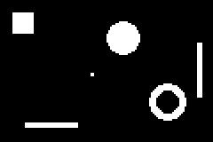 | 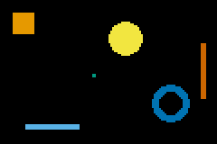 | 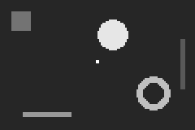 |
Reading the pictures. Every locator returns two numbers, from its *_x and *_y versions: a column position and a row position, both in [0, 1] (0 = left / top edge, 1 = right / bottom edge). The pictures draw them as a crosshair: the vertical red line is the x value and the horizontal red line is the y value. When an operator takes a point as input, that point is drawn in blue; a green box is a window the operator looked at.
Mask-free locators
bundle_number_locateFromImg reads the intensity image directly: no mask, no object labelling. Almost all of them work the same way:
- give every pixel a weight (for most of them, its brightness; pixels below the optional
thresholdweigh nothing); - add the weights column by column (for
x) and row by row (fory), giving two profiles; - read one position off each profile: its centre of mass, its median, its peak, its first or last non-empty line.
The pictures below draw those profiles: grey bars under the image are the column weights (the profile *_x reads), grey bars on the right are the row weights (the profile *_y reads), and the red lines cross the bars at the position returned.
A toy column profile shows how the three main statistics differ. With weights [0, 1, 1, 0, 0, 0, 0, 0, 3, 0, 0, 1] over 12 columns:
toy = oa_toy
n = length(toy)
com = sum(toy .* (1:n)) / sum(toy) # centre of mass: weighted mean position
median = findfirst(cumsum(toy) .>= sum(toy) / 2) # first column holding half the mass
peak = argmax(toy) # heaviest column
to_unit(i) = round((i - 1) / (n - 1), digits = 3)
(com_column = round(com, digits = 2), com_x = to_unit(com),
median_column = median, median_x = to_unit(median),
projpeak_column = peak, projpeak_x = to_unit(peak))(com_column = 7.33, com_x = 0.576, median_column = 9, median_x = 0.727, projpeak_column = 9, projpeak_x = 0.727)The centre of mass (7.33) falls in an empty column between the objects; the median lands on the heavy object (column 9) as soon as it holds half the mass; the peak is the single heaviest column.
| Operator | What it answers | Pixel weight | Result (x, y values below) |
|---|---|---|---|
com_x / com_y (img) | Where is the average brightness? Every pixel pulls with its value, so the large bright background pulls towards the image centre. | value | 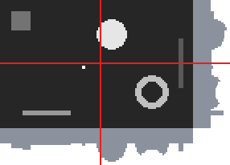 |
com_x / com_y (img, 0.5) | Where are the bright objects on average? Pixels under 0.5 (the background, the square, the bar) are ignored. | value if ≥ 0.5, else 0 | 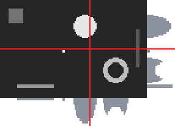 |
median_x / median_y (img) | The column (row) that splits the brightness in two halves. Less sensitive than com to a far-away bright speck. | value | |
median_x / median_y (img, 0.5) | Same, counting only pixels ≥ 0.5. | value if ≥ 0.5 | 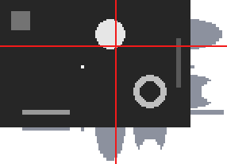 |
projpeak_x / projpeak_y (img) | The single column (row) holding the most brightness: the "thickest" place. | value | 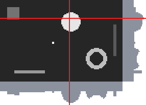 |
projpeak_x / projpeak_y (img, 0.5) | Same, counting only pixels ≥ 0.5. x lands on the disk (the column with the most bright pixels) but y on the paddle: its 30 bright pixels in a single row outweigh any row of the disk. The two coordinates are computed independently, so they need not point at the same object. | value if ≥ 0.5 | 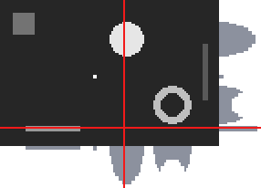 |
first_x / first_y (red) and last_x / last_y (blue) (img, 0.3) | Where does the foreground start and end? first_x is the leftmost column holding a pixel ≥ threshold, last_x the rightmost; first_y / last_y the top and bottom rows. Together they give the bounding box of everything above the threshold. | 1 if ≥ threshold | 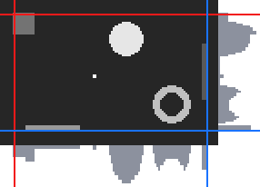 |
first_* / last_* (img) | Default threshold 0.5: the square (0.45) and the bar (0.35) no longer count. | 1 if ≥ 0.5 | 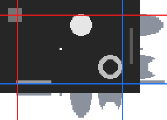 |
first_* / last_* (img, 0.8) | Only the disk and the ball are ≥ 0.8. | 1 if ≥ 0.8 | 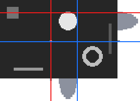 |
contrast_x / contrast_y (img) | Where does the image differ most from its average grey? Dark and bright objects both count. | abs(value − image mean) | 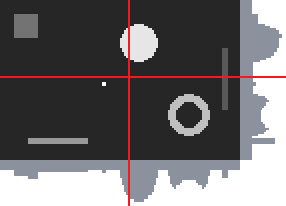 |
odd_x / odd_y (img) | Where are the pixels that are not background? The background is the most common value; it weighs 0, everything else weighs its difference from it. Good for sprites on a uniform backdrop, whatever their colour. | abs(value − background), 0 on the background | 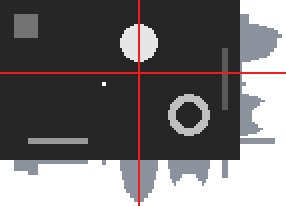 |
rare_x / rare_y (img) | Where are the pixels whose value is rare in the image (at most 5% of the pixels share it)? Large areas of one value are ignored, small sprites count, whatever their brightness. | 1 if the value is rare, else 0 | 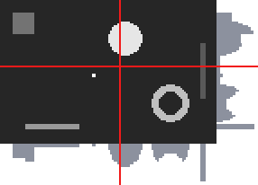 |
rare_x / rare_y (img, 0.01) | Rarer still (≤ 1% = 96 px): only the ball, the paddle and the bar remain. | 1 if rare | 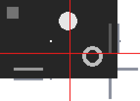 |
motion_x / motion_y (frame, next) | Where did something change between two frames? Shown on abs(frame − next): only the ball's old and new places are non-zero, so the result is between them. | abs(a − b) | 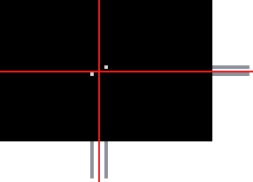 |
Two locators do not use profiles:
| Operator | What it answers | Result |
|---|---|---|
argmax_x / argmax_y (img) | Where is the single brightest pixel? (the ball, 1.0) |  |
argmin_x / argmin_y (img) | Where is the single darkest pixel? (here the background is uniform, so the first background pixel in column order: the top-left corner) | 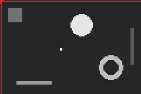 |
spread_x / spread_y (img) | How spread out is the brightness? The weighted standard deviation of the column (row) profile, as a fraction of the image size. The green box is com ± spread. | 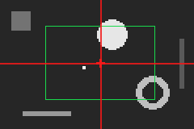 |
spread_x / spread_y (img, 0.5) | Same, bright pixels only: the box tightens around the bright objects. | 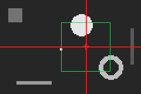 |
The values behind every picture, on the example frame:
calls = [
("com", ()), ("com", (0.5,)), ("median", ()), ("median", (0.5,)), ("projpeak", ()), ("projpeak", (0.5,)),
("first", (0.3,)), ("last", (0.3,)), ("first", ()), ("last", ()), ("first", (0.8,)), ("last", (0.8,)),
("contrast", ()), ("odd", ()), ("rare", ()), ("rare", (0.01,)), ("argmax", ()), ("argmin", ()),
("spread", ()), ("spread", (0.5,)),
]
for (stem, args) in calls
x = g_call(getfield(OA_L, Symbol(stem, :_x)), scene, args...)
y = g_call(getfield(OA_L, Symbol(stem, :_y)), scene, args...)
call = isempty(args) ? "(img)" : "(img, $(args[1]))"
println(rpad("$(stem)_x / $(stem)_y $call", 34), "x = ", rpad(round(x, digits = 3), 8), "y = ", round(y, digits = 3))
end
println(rpad("motion_x / motion_y (frame, next)", 34), "x = ", rpad(round(g_call(OA_L.motion_x, scene, scene_next), digits = 3), 8),
"y = ", round(g_call(OA_L.motion_y, scene, scene_next), digits = 3))com_x / com_y (img) x = 0.518 y = 0.489
com_x / com_y (img, 0.5) x = 0.611 y = 0.495
median_x / median_y (img) x = 0.555 y = 0.468
median_x / median_y (img, 0.5) x = 0.605 y = 0.354
projpeak_x / projpeak_y (img) x = 0.563 y = 0.215
projpeak_x / projpeak_y (img, 0.5)x = 0.563 y = 0.873
first_x / first_y (img, 0.3) x = 0.059 y = 0.089
last_x / last_y (img, 0.3) x = 0.95 y = 0.899
first_x / first_y (img) x = 0.118 y = 0.152
last_x / last_y (img) x = 0.874 y = 0.899
first_x / first_y (img, 0.8) x = 0.429 y = 0.152
last_x / last_y (img, 0.8) x = 0.655 y = 0.532
contrast_x / contrast_y (img) x = 0.537 y = 0.479
odd_x / odd_y (img) x = 0.576 y = 0.455
rare_x / rare_y (img) x = 0.554 y = 0.46
rare_x / rare_y (img, 0.01) x = 0.593 y = 0.683
argmax_x / argmax_y (img) x = 0.429 y = 0.519
argmin_x / argmin_y (img) x = 0.0 y = 0.0
spread_x / spread_y (img) x = 0.28 y = 0.286
spread_x / spread_y (img, 0.5) x = 0.173 y = 0.259
motion_x / motion_y (frame, next) x = 0.466 y = 0.5Around a point: refine and peak
These take a point (x, y) (blue) and look only inside a window around it (green box, p = 10%, 25% or 50% of the image's width and height):
refine_x_<p>/refine_y_<p>return the centre of mass of the brightness inside the window (red). Use it to snap a rough coordinate onto the object next to it: the input only has to be close.peak_x_<p>/peak_y_<p>return the brightest pixel inside the window (red).
If the window holds no brightness at all, the input point is returned unchanged.
Important: refine weighs every pixel by its value, background included. On the frame, the background is 0.15 everywhere, so a large window is mostly background and its centre of mass stays near the window's centre: refine only snaps well on a dark background or on a mask. The second column runs the same calls on the binary mask (background 0), where refine jumps onto the object in the window.
All calls below start from the blue point (x, y) = (0.38, 0.45), on the background between the square, the disk and the ball:
| Window | refine_*_<p> on the frame | refine_*_<p> on the mask | peak_*_<p> on the frame |
|---|---|---|---|
10p (8 × 12 px): nothing but background inside. On the frame refine returns the window's centre (all pixels weigh the same), on the mask the input unchanged (no mass), and peak the window's first pixel (all equal, first one wins). | 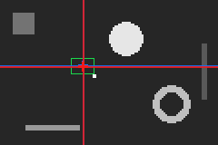 | 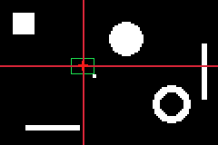 | 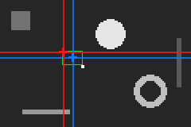 |
25p (20 × 30 px): the ball enters the window. On the frame the 4-pixel ball is outweighed by 600 background pixels and refine barely moves; on the mask it snaps onto the ball; peak jumps onto it. | 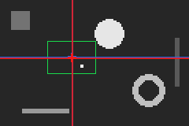 | 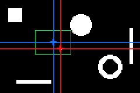 | 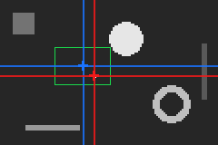 |
50p (40 × 60 px): part of the disk enters too. refine is pulled towards the disk (much more mass than the ball); peak stays on the ball, the brightest pixel. | 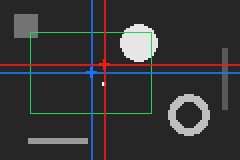 | 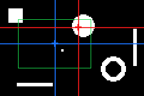 | 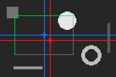 |
for (stem, input, label) in ((:refine, scene, "frame"), (:refine, mask, "mask"), (:peak, scene, "frame")), p in (10, 25, 50)
x = g_call(getfield(OA_L, Symbol(stem, :_x_, p, :p)), input, oa_query...)
y = g_call(getfield(OA_L, Symbol(stem, :_y_, p, :p)), input, oa_query...)
println(rpad("$(stem)_x_$(p)p / $(stem)_y_$(p)p ($label, 0.38, 0.45)", 48), "x = ", rpad(round(x, digits = 3), 8), "y = ", round(y, digits = 3))
endrefine_x_10p / refine_y_10p (frame, 0.38, 0.45) x = 0.378 y = 0.456
refine_x_25p / refine_y_25p (frame, 0.38, 0.45) x = 0.38 y = 0.458
refine_x_50p / refine_y_50p (frame, 0.38, 0.45) x = 0.434 y = 0.404
refine_x_10p / refine_y_10p (mask, 0.38, 0.45) x = 0.38 y = 0.45
refine_x_25p / refine_y_25p (mask, 0.38, 0.45) x = 0.433 y = 0.525
refine_x_50p / refine_y_50p (mask, 0.38, 0.45) x = 0.546 y = 0.284
peak_x_10p / peak_y_10p (frame, 0.38, 0.45) x = 0.328 y = 0.405
peak_x_25p / peak_y_25p (frame, 0.38, 0.45) x = 0.429 y = 0.519
peak_x_50p / peak_y_50p (frame, 0.38, 0.45) x = 0.429 y = 0.519Chaining refine (feeding its output back as the next input) is a small attention loop: three chained refine_*_25p from (0.2, 0.2), blue start, green steps, red end. On the mask it walks onto the square and settles; on the frame the background holds it in place.
| Chain on the mask | Chain on the frame | refine_x_25p(img, 0.2): one scalar means x = y = 0.2 |
|---|---|---|
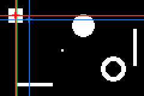 | 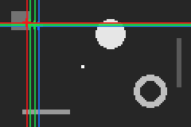 | 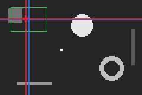 |
Object locators
bundle_number_objectLocateFromImg labels the 8-connected objects of the mask, selects one and returns its centroid. Inputs are a binary mask, or an intensity image thresholded at 0.5 (or at an explicit last-argument threshold). Ties go to the object met first in a column-major scan. An empty mask returns 0.5.
In the pictures of this section, the red crosshair is the centroid of the selected object: the vertical line is the value returned by obj_x_<sel>, the horizontal line the value of obj_y_<sel>. All six objects of the mask are candidates; the selector decides which one is reported.
Fixed selectors
Every call below is obj_x_<sel>(mask) / obj_y_<sel>(mask).
<sel> | Selects the object with the | Result |
|---|---|---|
largest | greatest pixel area |  |
smallest | least pixel area |  |
second_largest | second-greatest pixel area |  |
most_elongated | greatest elongation |  |
least_elongated | least elongation |  |
most_circular | greatest moment circularity | 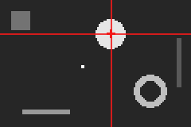 |
least_circular | least moment circularity |  |
most_rectangular | greatest extent (bounding-box fill) |  |
least_rectangular | least extent |  |
widest | widest bounding box |  |
narrowest | narrowest bounding box |  |
tallest | tallest bounding box |  |
shortest | shortest bounding box | 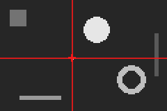 |
topmost | topmost centroid |  |
bottommost | bottommost centroid | 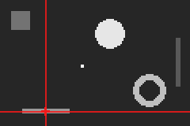 |
leftmost | leftmost centroid |  |
rightmost | rightmost centroid | 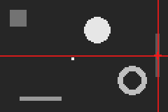 |
most_central | centroid closest to the image centre |  |
most_peripheral | centroid farthest from the centre |  |
most_isolated | farthest from any other centroid |  |
least_isolated | closest to another centroid |  |
brightest | greatest mean of source; call (mask, source) |  |
darkest | least mean of source; call (mask, source) |  |
The values behind the pictures:
for sel in (:largest, :smallest, :most_elongated, :most_circular, :least_circular, :tallest)
x = g_call(getfield(OA_O, Symbol(:obj_x_, sel)), mask)
y = g_call(getfield(OA_O, Symbol(:obj_y_, sel)), mask)
println(rpad(sel, 16), "x = ", round(x, digits = 3), " y = ", round(y, digits = 3))
endlargest x = 0.58 y = 0.266
smallest x = 0.433 y = 0.525
most_elongated x = 0.941 y = 0.494
most_circular x = 0.58 y = 0.266
least_circular x = 0.941 y = 0.494
tallest x = 0.941 y = 0.494Effect of threshold on an intensity input
obj_x_largest(img, threshold). At 0.5 the square (0.45) and the bar (0.35) disappear; at 0.8 only the disk and the ball remain.
threshold = 0.3 | 0.5 (default) | 0.8 |
|---|---|---|
 |  |  |
rank_area: pick by relative size
obj_x_rank_area(mask, k): k = 0 smallest, 1 largest, default 0.5.
k = 0 | k = 0.5 | k = 1 |
|---|---|---|
like_<prop>: the object whose property is closest to v
obj_x_like_<prop>(mask, v) with <prop> one of area, width, height, elongation, circularity, extent (all in [0, 1], see the descriptors below). This is "the ball-sized thing" or "the paddle-shaped thing".
| Call | Result | Call | Result |
|---|---|---|---|
obj_x_like_area(mask, 0.0005) — ball-sized |  | obj_x_like_area(mask, 0.03) — disk-sized |  |
obj_x_like_width(mask, 0.25) — a quarter of the width |  | obj_x_like_height(mask, 0.4) — 40% of the height |  |
obj_x_like_elongation(mask, 0.0) — isotropic | 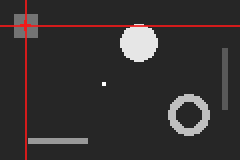 | obj_x_like_elongation(mask, 1.0) — line-like |  |
obj_x_like_circularity(mask, 0.7) — ring-like |  | obj_x_like_extent(mask, 0.6) — fills 60% of its box | 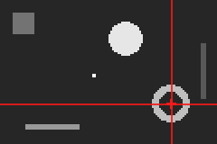 |
nearest: track from a point
obj_x_nearest(mask, s) uses x = y = s; obj_x_nearest(mask, x, y) takes both. Feed it the object's position from the previous frame to keep following it. Blue is the query, red the object found.
obj_x_nearest(mask, 0.3) | obj_x_nearest(mask, 0.9, 0.2) |
|---|---|
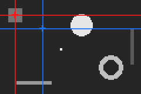 | 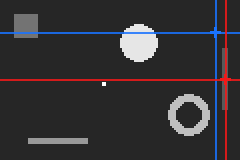 |
dx / dy: offsets between two objects
obj_dx_<a>_<b>(mask) returns x(a) - x(b) in [-1, 1] (same for dy), e.g. the ball relative to the paddle. Red is <a>, blue is <b>.
obj_d*_smallest_largest | obj_d*_smallest_most_elongated | obj_d*_second_largest_largest |
|---|---|---|
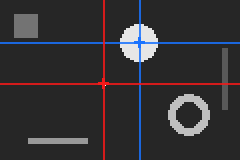 | 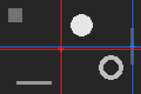 | 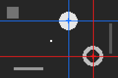 |
for (a, b) in ((:smallest, :largest), (:smallest, :most_elongated), (:second_largest, :largest)), d in (:dx, :dy)
name = Symbol(:obj_, d, :_, a, :_, b)
println(rpad(name, 34), round(g_call(getfield(OA_O, name), mask), digits = 3))
endobj_dx_smallest_largest -0.147
obj_dy_smallest_largest 0.259
obj_dx_smallest_most_elongated -0.508
obj_dy_smallest_most_elongated 0.032
obj_dx_second_largest_largest 0.21
obj_dy_second_largest_largest 0.456Object descriptors
bundle_number_objectDescribeFromImg uses the same selectors and inputs but returns what the selected object looks like, independently of where it is:
| Descriptor | Meaning |
|---|---|
area | fraction of the image's pixels |
width, height | bounding box as a fraction of the image side |
elongation | 1 − sqrt(λmin / λmax) of the second moments: 0 round, → 1 line |
circularity | A / (2π(σ²_r + σ²_c)): 1 for a disk, lower for rings and bars |
extent | area over bounding-box area: 1 for an axis-aligned rectangle |
orientation | principal-axis angle mapped to [0, 1]: 0.5 horizontal, 0 and 1 both vertical; 0.5 for shapes without an axis (disk, square) |
Each name is obj_<descriptor>_<sel>, plus obj_<descriptor>_nearest(mask, [s | x, y]). Empty masks return 0.0. Values for every selector on the example mask:
descriptors = (:area, :width, :height, :elongation, :circularity, :extent, :orientation)
println(rpad("selector", 18), join(rpad.(string.(descriptors), 12)))
for sel in oa_selectors
values = [g_call(getfield(OA_O, Symbol(:obj_, d, :_, sel)), mask) for d in descriptors]
println(rpad(sel, 18), join(rpad.(string.(round.(values, digits = 3)), 12)))
endselector area width height elongation circularity extent orientation
largest 0.029 0.158 0.238 0.0 0.996 0.767 0.5
smallest 0.0 0.017 0.025 0.0 0.955 1.0 0.5
most_elongated 0.01 0.025 0.388 0.903 0.183 1.0 1.0
least_elongated 0.015 0.1 0.15 0.0 0.955 1.0 0.5
most_circular 0.029 0.158 0.238 0.0 0.996 0.767 0.5
least_circular 0.01 0.025 0.388 0.903 0.183 1.0 1.0
most_rectangular 0.015 0.1 0.15 0.0 0.955 1.0 0.5
least_rectangular 0.022 0.175 0.262 0.0 0.45 0.481 0.5
widest 0.009 0.25 0.038 0.9 0.189 1.0 0.5
narrowest 0.0 0.017 0.025 0.0 0.955 1.0 0.5
tallest 0.01 0.025 0.388 0.903 0.183 1.0 1.0
shortest 0.0 0.017 0.025 0.0 0.955 1.0 0.5
topmost 0.015 0.1 0.15 0.0 0.955 1.0 0.5
bottommost 0.009 0.25 0.038 0.9 0.189 1.0 0.5
leftmost 0.015 0.1 0.15 0.0 0.955 1.0 0.5
rightmost 0.01 0.025 0.388 0.903 0.183 1.0 1.0
most_central 0.0 0.017 0.025 0.0 0.955 1.0 0.5
most_peripheral 0.015 0.1 0.15 0.0 0.955 1.0 0.5
most_isolated 0.015 0.1 0.15 0.0 0.955 1.0 0.5
least_isolated 0.022 0.175 0.262 0.0 0.45 0.481 0.5
second_largest 0.022 0.175 0.262 0.0 0.45 0.481 0.5obj_<descriptor>_nearest(mask, x, y) describes the object closest to a point. From the top-left corner (0.1, 0.1) the nearest object is the square; from (0.9, 0.6) the thin vertical bar:
println(rpad("", 44), join(rpad.(string.(descriptors), 12)))
for point in ((0.1, 0.1), (0.9, 0.6))
values = [g_call(getfield(OA_O, Symbol(:obj_, d, :_nearest)), mask, point...) for d in descriptors]
println(rpad("obj_<descriptor>_nearest(mask, $(point[1]), $(point[2]))", 44), join(rpad.(string.(round.(values, digits = 3)), 12)))
end area width height elongation circularity extent orientation
obj_<descriptor>_nearest(mask, 0.1, 0.1) 0.015 0.1 0.15 0.0 0.955 1.0 0.5
obj_<descriptor>_nearest(mask, 0.9, 0.6) 0.01 0.025 0.388 0.903 0.183 1.0 1.0obj_count and obj_dist_nearest (distance from a point to the nearest centroid, divided by the image diagonal):
(
count_mask = g_call(OA_O.obj_count, mask),
count_t05 = g_call(OA_O.obj_count, scene, 0.5),
count_t08 = g_call(OA_O.obj_count, scene, 0.8),
dist_from_centre = round(g_call(OA_O.obj_dist_nearest, mask), digits = 3),
dist_from_corner = round(g_call(OA_O.obj_dist_nearest, mask, 0.0, 0.0), digits = 3),
)(count_mask = 6.0, count_t05 = 4.0, count_t08 = 2.0, dist_from_centre = 0.051, dist_from_corner = 0.134)Zoom
The zoom bundles are factories: specialise them with the image type to get same-size, same-type outputs. Intensity images are resampled bilinearly; binary masks and segment maps use nearest neighbour so labels are never blended. Windows reaching past the border are clipped, never padded. An empty mask returns the source unchanged.
Mask-driven operators accept (src, mask) and (src, mask, margin), where mask is a binary mask or an intensity map thresholded at 0.5. Intensity sources also accept (img), (img, threshold) and (img, threshold, margin), using the image itself as the mask; binary sources accept (mask) and (mask, margin). margin grows the box by that fraction of its own size on each side (default 0.1).
What each zoom does
| Family | What it does to the image |
|---|---|
zoom_crop_bbox[_<sel>] | Finds the bounding box of the mask's foreground (or of one object chosen by <sel>), grows it by margin, cuts it out and stretches it back to the full image size. The object fills the frame, but a thin object gets stretched. |
zoom_crop_aspect[_<sel>] | Same, but first widens the box to the image's width/height ratio, so the object is magnified without being distorted. |
zoom_crop_isolate[_<sel>] | Same as zoom_crop_bbox, and every pixel that is not part of the object(s) is set to zero: the object alone, on black. |
zoom_recenter[_<sel>] | No crop, no magnification: shifts the whole image so the object's centroid lands on the image centre (the uncovered border becomes zero). Position is removed, size is kept. |
zoom_glimpse_<p>(img, x, y) | Cuts a window of p (10%, 25%, 50%) of each side around a point given as numbers, e.g. by a locator, and stretches it back. |
zoom_center(img, z) | Keeps the central fraction z of each side: a digital zoom into the middle. |
zoom_rows(img, a, b), zoom_cols(img, a, b) | Keeps a horizontal (vertical) band between two positions and stretches it. |
zoom_recenter_point(img, x, y) | Shifts the image so a given point lands on the centre. |
<sel> is any selector of the object locators (largest, most_circular, …). Without <sel>, the whole foreground of the mask is used.
Every mask-driven operator
Each row is one selector, each column one operator family, all called as op(frame, mask, 0.3). The first row uses the whole foreground (zoom_crop_bbox, zoom_crop_aspect, zoom_crop_isolate, zoom_recenter).
| Selector | zoom_crop_bbox_<sel> | zoom_crop_aspect_<sel> | zoom_crop_isolate_<sel> | zoom_recenter_<sel> |
|---|---|---|---|---|
| (whole foreground) | 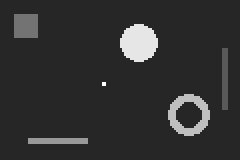 |  | 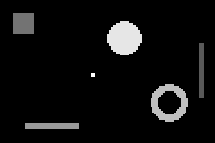 | 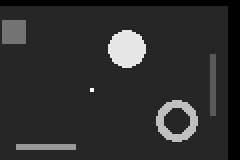 |
largest |  |  | ||
smallest |  |  |  | 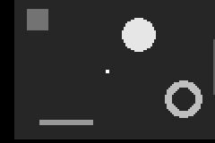 |
second_largest |  | 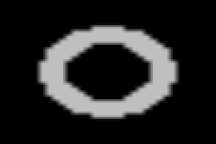 | ||
most_elongated |  |  |  |  |
least_elongated |  |  |  | 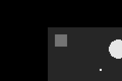 |
most_circular | 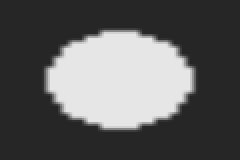 | 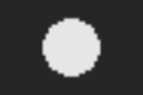 |  |  |
least_circular |  |  | ||
most_rectangular |  |  |  | |
least_rectangular |  |  |  |  |
widest |  |  |  | |
narrowest |  |  |  |  |
tallest |  |  | ||
shortest |  |  | ||
topmost |  |  |  | |
bottommost |  | |||
leftmost |  |  |  | |
rightmost |  |  |  |  |
most_central |  |  |  | |
most_peripheral |  |  |  |  |
most_isolated |  |  |  |  |
least_isolated |  |  |  | |
brightest |  |  |  |  |
darkest |  |  |  |  |
brightest and darkest score each object by the mean of the source image and exist only in the intensity bundle. zoom_recenter_* ignores margin.
The margin is relative to the object's own box, so a 2×2 ball with the default margin is cropped to exactly 2×2 and fills the output with one value (the smallest row uses 0.3, i.e. one pixel of context). For small sprites, locate them with obj_* and use zoom_glimpse_* instead.
Effect of margin
zoom_crop_bbox_most_circular(frame, mask, margin):
margin = 0 | 0.1 (default) | 0.5 | 1.0 |
|---|---|---|---|
Self-masking an intensity image
zoom_crop_bbox(frame) thresholds the frame itself at 0.5; zoom_crop_bbox(frame, threshold, margin) sets both.
(frame) | (frame, 0.3, 0.0) | (frame, 0.8, 0.0) |
|---|---|---|
Binary and segment outputs
The binary bundle zooms a mask on its own foreground with (mask); the segment bundle zooms a label map with (labels, mask, margin). Both use nearest neighbour, so outputs only contain values present in the input.
| Selector | Binary op(mask) | Segment op(labels, mask, 0.3) |
|---|---|---|
zoom_crop_bbox_largest | ||
zoom_crop_bbox_most_elongated |  | |
zoom_crop_bbox_tallest |  |
Coordinate-driven zooms
zoom_glimpse_<p>(img, x, y) crops a window of p of each side around the point; (img, s) uses x = y = s, and (img) the centre. Near a border the window is clipped, so it covers less and is stretched more.
Input point (0.45, 0.55) | zoom_glimpse_10p | zoom_glimpse_25p | zoom_glimpse_50p |
|---|---|---|---|
zoom_glimpse_25p(img, 0.9) | zoom_glimpse_25p(img, 0.0, 0.0) (clipped corner) |
|---|---|
zoom_center(img, z) keeps the central fraction z ∈ [0.05, 1] of each side (default 0.5):
z = 0.25 | z = 0.5 | z = 0.75 |
|---|---|---|
zoom_rows(img, a, b) and zoom_cols(img, a, b) keep a band between two positions (any order) and stretch it; (img, a) keeps a 25% band centred on a. zoom_recenter_point(img, x, y) translates without rescaling so the point lands in the centre.
zoom_rows(img, 0.6, 0.95) | zoom_rows(img, 0.88) | zoom_cols(img, 0.65, 1.0) |
|---|---|---|
zoom_recenter_point(img, 0.8, 0.7) | zoom_recenter_point(img, 0.2) |
|---|---|
On a real image
Lena (half resolution, N0f16) with its Itti-Koch saliency map as the mask. The salient region is located with obj_*_largest(saliency), then cropped in several ways with margin 0.2; the last image is a glimpse driven by the locator output.
| Source | Saliency (mask at 0.5) | obj_*_largest(saliency) | rare_*(img) |
|---|---|---|---|
 |
zoom_crop_bbox_largest | zoom_crop_aspect_largest | zoom_crop_isolate_largest | zoom_crop_bbox_brightest | zoom_glimpse_25p(img, obj_x, obj_y) |
|---|---|---|---|---|
Bundles
MAGE.image2D_object_common — Module
Shared machinery for the 2D object, descriptor, zoom and mask libraries.
Sections of this file:
- Scalar inputs and coordinates —
clamp_unitsanitises the scalar arguments evolved programs pass in;position_to_unit/unit_to_positionconvert between pixel positions and normalised[0, 1]coordinates. - Scratch buffers —
scratchhands out per-task working arrays that are reused across calls, so hot operators do not allocate temporaries. - Distance transforms — exact (
squared_distance_map!) and bounded by a radius (squared_distance_map_upto!). - Holes —
background_holes!finds background regions enclosed by the foreground. - Foreground tests —
IsSet(binary pixels),AtLeast(intensity threshold) andfast_foreground_test, which swaps in a lookup table for 8-bit images. - Connected components —
object_tablelabels the 8-connected objects of a mask and accumulates their area, bounding box and moments. - Per-object properties and selectors — descriptors computed in O(1) from the table (elongation, circularity, …) and the selectors that pick one object (largest, most circular, …).
- Convex hulls — hull vertices, Pick's-theorem pixel count, solidity.
Coordinate convention, shared with region_*: x is the column and y the row, both normalised to [0, 1] so that 0 is the first pixel centre and 1 the last.
Example
m = falses(6, 8)
m[2:3, 2:3] .= true # a 2 × 2 square
m[5, 6:8] .= true # a 1 × 3 bar
t = object_table(m, identity) # `identity`: the matrix already holds Bools
t.n # 2
t.area # [4, 3] (ids in column-major order of first pixel)
centroid_row(t, 2), centroid_col(t, 2) # (5.0, 7.0)
unit_x(t, 2) # (7 − 1) / (8 − 1) ≈ 0.86
SELECTOR_FUNCTIONS[1][2](t) # :largest → object 1MAGE.number_locateFromImg — Module
Mask-free locators: image → normalised coordinate in [0, 1].
Bundles
The exhaustive, always-current list of operators in each bundle is on the Bundle Catalogue page.
How this file is organised
Most locators share one recipe:
- pick a weight per pixel (a functor such as
_Above(t): the pixel value when at leastt, else 0); - sum the weights per column (for
x) or per row (fory) into a short profile vector (_projection); - read a statistic off the profile (centre of mass, median, peak, …) and convert its position to
[0, 1](position_to_unit: first pixel → 0, last pixel → 1).
Example
using MAGE, ImageCore
m = zeros(5, 11); m[2, 9] = 1.0 # one bright pixel: row 2, column 9
img = SImageND(IntensityPixel{N0f8}.(m))
L = MAGE.number_locateFromImg
L.com_x(img) # (9 − 1) / (11 − 1) = 0.8
L.com_y(img) # (2 − 1) / (5 − 1) = 0.25
L.argmax_x(img) # 0.8 as well
L.refine_x_25p(img, 0.7, 0.3) # snaps x = 0.7 onto the bright pixel nearby: 0.8MAGE.number_locateFromImg.bundle_number_locateFromImg — Constant
bundle_number_locateFromImgMask-free locators returning where something is in an image, as normalised coordinates in [0, 1] (x = column, y = row, same convention as the region_* operators so outputs can be wired straight into them).
All operators make one or two passes over the pixels and allocate at most a few small vectors. Empty selections return 0.5 (the image centre).
com_*,median_*,spread_*: weighted centre, weighted median and weighted spread of the pixel mass, optionally above a threshold.argmax_*,argmin_*: brightest / darkest pixel.projpeak_*: column (row) with the greatest summed mass.first_*,last_*: extreme foreground pixels along an axis.contrast_*,odd_*,rare_*: centre of the pixels that differ from the mean, from the dominant (background) value, or that carry rare values.motion_*: centre of mass of the absolute difference of two images.refine_*_<p>,peak_*_<p>: centre of mass (or argmax) inside a window ofpof the image around a given point. Feeding a rough coordinate through arefinesnaps it onto the nearest mass; chaining refines converges further.
Operators taking a point accept (img, s), meaning x = y = s, or (img, x, y).
MAGE.number_objectFromImg — Module
Object locators and descriptors: image → scalar, computed on the 8-connected foreground objects of a mask.
Bundles
The exhaustive, always-current list of operators in each bundle is on the Bundle Catalogue page.
How this file is organised
Every operator follows the same three steps:
- label the objects of the input into an
ObjectTable(_mask_tablefor a binary mask,_intensity_tablefor an intensity map and a threshold); - select one object: a selector
select(table) -> idsuch asargmax of the area(SELECTOR_FUNCTIONSinobject_common.jl),0when there is none; - measure it:
measure(table, id) -> Float64, its centroidxory(locators) or a shape descriptor (descriptors).
The macros @_single_input, @_parametric_input and @_point_input write the input methods; the loops at the end combine every selector with every measure.
Example
using MAGE, ImageCore
m = falses(20, 40)
m[3:4, 5:6] .= true # a small square, top left
m[10:17, 25:36] .= true # a large rectangle, right
mask = SImageND(BinaryPixel.(m))
O = MAGE.number_objectFromImg
O.obj_x_largest(mask) # (30.5 − 1) / 39 ≈ 0.76: centre column of the rectangle
O.obj_y_smallest(mask) # (3.5 − 1) / 19 ≈ 0.13: centre row of the square
O.obj_area_largest(mask) # 96 / 800 = 0.12
O.obj_count(mask) # 2.0
O.obj_x_nearest(mask, 0.1, 0.1) # the square is nearest to the top-left corner: ≈ 0.12
O.obj_dx_smallest_largest(mask) # ≈ −0.64: the square is left of the rectangleMAGE.number_objectFromImg.bundle_number_objectLocateFromImg — Constant
bundle_number_objectLocateFromImgWhere is the object with property X? Each operator labels the 8-connected objects of a mask, selects one, and returns its centroid as a normalised coordinate in [0, 1] (x = column, y = row, the region_* convention). Empty masks return 0.5.
Inputs: a binary mask, or an intensity map thresholded at 0.5 (or at an explicit threshold, given as the last argument).
obj_x_<sel>/obj_y_<sel>: fixed selectors —largest,smallest,second_largest,most_elongated,most_circular,most_rectangular,widest,tallest,topmost,leftmost,most_central,most_isolated, … and their opposites.obj_*_brightest/obj_*_darkest:(mask, source)selects by the mean ofsourceover each object.obj_*_rank_area:(mask, k)picks the object at relative area rankk.obj_*_like_<prop>:(mask, v)picks the object whose property is closest tov, e.g.obj_x_like_area(mask, 0.002)finds a ball-sized object.obj_*_nearest:(mask, s)or(mask, x, y)picks the object closest to a point — feed it a previous position to track an object.obj_dx_<a>_<b>/obj_dy_<a>_<b>: signed offset between two selected objects, in[-1, 1].
MAGE.number_objectFromImg.bundle_number_objectDescribeFromImg — Constant
bundle_number_objectDescribeFromImgWhat does the selected object look like? Same selection rules and inputs as bundle_number_objectLocateFromImg, but returning a descriptor of the selected object instead of its position, so the value does not depend on where the object is. Empty masks return 0.0.
obj_<desc>_<sel>andobj_<desc>_nearestwith<desc>one ofarea(fraction of image pixels),widthandheight(bounding box as a fraction of the image side),elongation(1 − sqrt(λmin / λmax)),circularity(1for a disk),extent(area over bounding-box area) andorientation(principal-axis angle mapped to[0, 1],0.5horizontal,0and1vertical,0.5for shapes without an axis).obj_count: number of objects.obj_dist_nearest: distance from a point to the nearest object centroid, normalised to[0, 1].
MAGE.image2D_zoom — Module
Attention operators: crop a region found by a mask or given by coordinates and resize it back to the full image size, or translate the image so a point lands in the centre.
Bundles
- bundleimage2DIntensityzoom_factory
- bundleimage2DBinaryzoom_factory
- bundleimage2DSegmentzoom_factory
The exhaustive operator list is on the Bundle Catalogue page.
How the factories work
Every entry of these bundles is a factory: a function of an image type I (the type the operator must output, e.g. SImage2D{28,28,IntensityPixel{N0f8}}) that defines and returns a function specialised for it. The returned function has several methods, one per accepted input shape; for a mask-driven operator:
| Call | Meaning |
|---|---|
op(src, mask, margin) | mask is a binary image of the same size |
op(src, mask) | same, default margin |
op(src, saliency, margin) | saliency is an intensity image, thresholded at 0.5 |
op(src, saliency) | same, default margin |
op(src), op(src, margin) | binary src: zoom on its own foreground |
op(src), op(src, threshold[, margin]) | intensity src: threshold itself |
Every method also accepts and ignores extra trailing arguments (args...), which is how MAGE passes unused inputs.
The work itself is done by plain kernels on the raw pixel matrices (src.img); the factory methods only unpack the inputs, sanitise the scalars with clamp_unit, call the kernel and wrap the result back into an SImageND.
Example
using MAGE, ImageCore
m = zeros(40, 40); m[5:12, 25:36] .= 0.9 # one bright object, top right
img = SImageND(IntensityPixel{N0f8}.(m))
I = typeof(img)
crop = bundle_image2DIntensity_zoom_factory[:zoom_crop_bbox].fn(I)
crop(img) # the object's box (grown by 10%) stretched to 40 × 40
crop(img, 0.5, 0.0) # threshold 0.5, no margin: the box exactly
glimpse = bundle_image2DIntensity_zoom_factory[:zoom_glimpse_25p].fn(I)
glimpse(img, 0.75, 0.2) # a 10 × 10 window around column 30, row 9, resized to 40 × 40MAGE.image2D_zoom.bundle_image2DIntensity_zoom_factory — Constant
bundle_image2DIntensity_zoom_factoryAttention operators returning a same-size intensity image: crop around a mask, a selected object or a point, then resize back (bilinear).
zoom_crop_bbox[_<sel>]: bounding box of the foreground, or of the object chosen by a selector (largest,most_circular,brightest, …).zoom_crop_aspect[_<sel>]: same box widened to the image aspect ratio, so shapes are not stretched.zoom_crop_isolate[_<sel>]: same box with everything outside the object(s) set to zero.zoom_recenter[_<sel>]: translate the object centroid to the image centre without rescaling (borders filled with zero).zoom_glimpse_<p>,zoom_center,zoom_rows,zoom_cols,zoom_recenter_point: coordinate-driven windows.
Mask-driven signatures: (img), (img, threshold) and (img, threshold, margin) use the image itself as the mask; (img, mask) and (img, mask, margin) take a binary mask or an intensity map thresholded at 0.5.
Window conventions shared by all zoom operators:
- The crop is resized back to the specialised image size: bilinear for intensity images, nearest neighbour for binary masks and segment maps, so labels and mask values are never blended.
- Windows reaching past the border are clipped to the image; nothing is padded.
margin ∈ [0, 1](default0.1) grows a bounding box by that fraction of its own height and width on each side.- An empty mask leaves the image unchanged.
- Coordinates are normalised to
[0, 1](x= column,y= row) like the locator libraries, and(img, s)meansx = y = s.
MAGE.image2D_zoom.bundle_image2DBinary_zoom_factory — Constant
bundle_image2DBinary_zoom_factoryAttention operators returning a same-size binary mask, resized with nearest neighbour. Same operators as bundle_image2DIntensity_zoom_factory except the source-statistic selectors. Mask-driven signatures: (mask) and (mask, margin) zoom on the mask's own foreground; (mask, other) and (mask, other, margin) use another binary mask or intensity map.
Window conventions shared by all zoom operators:
- The crop is resized back to the specialised image size: bilinear for intensity images, nearest neighbour for binary masks and segment maps, so labels and mask values are never blended.
- Windows reaching past the border are clipped to the image; nothing is padded.
margin ∈ [0, 1](default0.1) grows a bounding box by that fraction of its own height and width on each side.- An empty mask leaves the image unchanged.
- Coordinates are normalised to
[0, 1](x= column,y= row) like the locator libraries, and(img, s)meansx = y = s.
MAGE.image2D_zoom.bundle_image2DSegment_zoom_factory — Constant
bundle_image2DSegment_zoom_factoryAttention operators returning a same-size segment (label) map, resized with nearest neighbour so labels are preserved. Mask-driven signatures: (labels, mask) and (labels, mask, margin) with a binary mask or an intensity map thresholded at 0.5.
Window conventions shared by all zoom operators:
- The crop is resized back to the specialised image size: bilinear for intensity images, nearest neighbour for binary masks and segment maps, so labels and mask values are never blended.
- Windows reaching past the border are clipped to the image; nothing is padded.
margin ∈ [0, 1](default0.1) grows a bounding box by that fraction of its own height and width on each side.- An empty mask leaves the image unchanged.
- Coordinates are normalised to
[0, 1](x= column,y= row) like the locator libraries, and(img, s)meansx = y = s.
Timings for the examples
Measured during this documentation build. See Timing methodology for measurement limits and input cases that can make operators expensive.
Julia 1.13.2; znver5; 1 Julia thread(s); optimisation level 2.
Times are warmed wall-clock measurements of the actual calls above, including invokelatest and allocations. Loading, factory generation and image rendering are excluded. CPU load and garbage collection affect these values. The maximum is the slowest observed sample, not a worst-case bound.
| Input | Dimensions | Pixel storage |
|---|---|---|
| image #1 | 80×120 | IntensityPixel{FixedPointNumbers.N0f8} |
| image #2 | 80×120 | IntensityPixel{FixedPointNumbers.N0f8} |
| image #3 | 80×120 | BinaryPixel{Bool} |
| image #4 | 80×120 | SegmentPixel{Int64} |
| image #5 | 128×128 | IntensityPixel{FixedPointNumbers.N0f16} |
| image #6 | 128×128 | IntensityPixel{FixedPointNumbers.N0f16} |
Numeric-only plot calls of the same operator and arity are grouped: argument ranges cover the sampled values, the median is the median of the per-case medians, and the maximum covers every observed sample. Image calls keep a row for each input/parameter combination.
| Operator | Inputs | Output | Median (µs) | Observed max (µs) | Allocated bytes (median) | Cases / samples |
|---|---|---|---|---|---|---|
com_x | image #1 | Float64 | 1.57 | 3.96 | 1056 | 1 / 3 |
com_y | image #1 | Float64 | 1.34 | 3.14 | 720 | 1 / 3 |
com_x | image #1; 0.5 | Float64 | 1.83 | 4.37 | 1120 | 1 / 3 |
com_y | image #1; 0.5 | Float64 | 1.55 | 2.42 | 784 | 1 / 3 |
median_x | image #1 | Float64 | 1.65 | 4.52 | 1104 | 1 / 3 |
median_y | image #1 | Float64 | 1.65 | 4.16 | 768 | 1 / 3 |
median_x | image #1; 0.5 | Float64 | 1.73 | 2.68 | 1120 | 1 / 3 |
median_y | image #1; 0.5 | Float64 | 1.61 | 2.42 | 784 | 1 / 3 |
argmax_x | image #1 | Float64 | 7.36 | 10.1 | 64 | 1 / 3 |
argmax_y | image #1 | Float64 | 7.41 | 9.25 | 64 | 1 / 3 |
argmin_x | image #1 | Float64 | 7.16 | 9.52 | 64 | 1 / 3 |
argmin_y | image #1 | Float64 | 7.04 | 10.12 | 64 | 1 / 3 |
projpeak_x | image #1 | Float64 | 2.32 | 5.83 | 1104 | 1 / 3 |
projpeak_y | image #1 | Float64 | 1.81 | 4.59 | 768 | 1 / 3 |
projpeak_x | image #1; 0.5 | Float64 | 2.42 | 3.46 | 1120 | 1 / 3 |
projpeak_y | image #1; 0.5 | Float64 | 1.85 | 3.18 | 784 | 1 / 3 |
contrast_x | image #1 | Float64 | 1.66 | 5.79 | 1104 | 1 / 3 |
contrast_y | image #1 | Float64 | 1.58 | 4.39 | 768 | 1 / 3 |
odd_x | image #1 | Float64 | 7.25 | 12.58 | 3224 | 1 / 3 |
odd_y | image #1 | Float64 | 7.22 | 11.55 | 2888 | 1 / 3 |
rare_x | image #1 | Float64 | 9.02 | 13.81 | 5344 | 1 / 3 |
rare_y | image #1 | Float64 | 9.41 | 19.09 | 5008 | 1 / 3 |
rare_x | image #1; 0.01 | Float64 | 8.93 | 9.86 | 5360 | 1 / 3 |
rare_y | image #1; 0.01 | Float64 | 9.56 | 10.56 | 5024 | 1 / 3 |
first_x | image #1; 0.3 | Float64 | 1.79 | 5.24 | 1120 | 1 / 3 |
first_y | image #1; 0.3 | Float64 | 1.67 | 4.19 | 784 | 1 / 3 |
last_x | image #1; 0.3 | Float64 | 1.73 | 4.3 | 1120 | 1 / 3 |
last_y | image #1; 0.3 | Float64 | 1.73 | 4.34 | 784 | 1 / 3 |
first_x | image #1; 0.5 | Float64 | 1.57 | 2.02 | 1120 | 1 / 3 |
first_y | image #1; 0.5 | Float64 | 1.49 | 1.58 | 784 | 1 / 3 |
last_x | image #1; 0.5 | Float64 | 1.49 | 1.6 | 1120 | 1 / 3 |
last_y | image #1; 0.5 | Float64 | 1.32 | 1.55 | 784 | 1 / 3 |
first_x | image #1; 0.8 | Float64 | 1.69 | 1.69 | 1120 | 1 / 3 |
first_y | image #1; 0.8 | Float64 | 1.57 | 1.68 | 784 | 1 / 3 |
last_x | image #1; 0.8 | Float64 | 1.48 | 1.59 | 1120 | 1 / 3 |
last_y | image #1; 0.8 | Float64 | 1.47 | 1.57 | 784 | 1 / 3 |
motion_x | image #1; image #2 | Float64 | 2.21 | 6.27 | 80 | 1 / 3 |
motion_y | image #1; image #2 | Float64 | 2.43 | 5.82 | 80 | 1 / 3 |
com_x | image #1; 0.0 | Float64 | 1.61 | 2.23 | 1120 | 1 / 3 |
com_y | image #1; 0.0 | Float64 | 1.43 | 1.5 | 784 | 1 / 3 |
spread_x | image #1; 0.0 | Float64 | 2.06 | 4.31 | 1120 | 1 / 3 |
spread_y | image #1; 0.0 | Float64 | 1.5 | 3.95 | 784 | 1 / 3 |
spread_x | image #1; 0.5 | Float64 | 1.84 | 1.9 | 1120 | 1 / 3 |
spread_y | image #1; 0.5 | Float64 | 1.55 | 1.61 | 784 | 1 / 3 |
refine_x_10p | image #1; 0.38; 0.45 | Float64 | 0.61 | 4.66 | 96 | 1 / 3 |
refine_y_10p | image #1; 0.38; 0.45 | Float64 | 0.51 | 3.06 | 96 | 1 / 3 |
peak_x_10p | image #1; 0.38; 0.45 | Float64 | 0.5 | 3.32 | 96 | 1 / 3 |
peak_y_10p | image #1; 0.38; 0.45 | Float64 | 0.5 | 3.08 | 96 | 1 / 3 |
refine_x_25p | image #1; 0.38; 0.45 | Float64 | 1.01 | 4.05 | 96 | 1 / 3 |
refine_y_25p | image #1; 0.38; 0.45 | Float64 | 1.0 | 3.51 | 96 | 1 / 3 |
peak_x_25p | image #1; 0.38; 0.45 | Float64 | 0.91 | 3.48 | 96 | 1 / 3 |
peak_y_25p | image #1; 0.38; 0.45 | Float64 | 0.99 | 3.38 | 96 | 1 / 3 |
refine_x_50p | image #1; 0.38; 0.45 | Float64 | 2.81 | 5.56 | 96 | 1 / 3 |
refine_y_50p | image #1; 0.38; 0.45 | Float64 | 2.78 | 5.19 | 96 | 1 / 3 |
peak_x_50p | image #1; 0.38; 0.45 | Float64 | 2.05 | 4.56 | 96 | 1 / 3 |
peak_y_50p | image #1; 0.38; 0.45 | Float64 | 2.06 | 4.61 | 96 | 1 / 3 |
refine_x_10p | image #3; 0.38; 0.45 | Float64 | 0.4 | 2.37 | 96 | 1 / 3 |
refine_y_10p | image #3; 0.38; 0.45 | Float64 | 0.35 | 1.49 | 96 | 1 / 3 |
refine_x_25p | image #3; 0.38; 0.45 | Float64 | 0.62 | 1.56 | 96 | 1 / 3 |
refine_y_25p | image #3; 0.38; 0.45 | Float64 | 0.54 | 1.61 | 96 | 1 / 3 |
refine_x_50p | image #3; 0.38; 0.45 | Float64 | 1.5 | 2.78 | 96 | 1 / 3 |
refine_y_50p | image #3; 0.38; 0.45 | Float64 | 1.43 | 2.74 | 96 | 1 / 3 |
refine_x_25p | image #3; 0.2; 0.2 | Float64 | 0.62 | 1.08 | 96 | 1 / 3 |
refine_y_25p | image #3; 0.2; 0.2 | Float64 | 0.52 | 0.67 | 96 | 1 / 3 |
refine_x_25p | image #3; 0.1134453781512605; 0.15822784810126583 | Float64 | 0.51 | 0.61 | 96 | 1 / 3 |
refine_y_25p | image #3; 0.1134453781512605; 0.15822784810126583 | Float64 | 0.5 | 0.56 | 96 | 1 / 3 |
refine_x_25p | image #3; 0.10504201680672269; 0.15822784810126583 | Float64 | 0.52 | 0.6 | 96 | 1 / 3 |
refine_y_25p | image #3; 0.10504201680672269; 0.15822784810126583 | Float64 | 0.49 | 0.56 | 96 | 1 / 3 |
refine_x_25p | image #1; 0.2; 0.2 | Float64 | 0.8 | 1.41 | 96 | 1 / 3 |
refine_y_25p | image #1; 0.2; 0.2 | Float64 | 0.87 | 1.01 | 96 | 1 / 3 |
refine_x_25p | image #1; 0.17768590749030946; 0.19048364131369735 | Float64 | 0.77 | 0.96 | 96 | 1 / 3 |
refine_y_25p | image #1; 0.17768590749030946; 0.19048364131369735 | Float64 | 0.8 | 0.88 | 96 | 1 / 3 |
refine_x_25p | image #1; 0.1543637384613837; 0.18007924377105014 | Float64 | 0.75 | 0.84 | 96 | 1 / 3 |
refine_y_25p | image #1; 0.1543637384613837; 0.18007924377105014 | Float64 | 0.88 | 0.91 | 96 | 1 / 3 |
refine_x_25p | image #1; 0.2 | Float64 | 0.92 | 1.78 | 80 | 1 / 3 |
refine_y_25p | image #1; 0.2 | Float64 | 0.95 | 1.9 | 80 | 1 / 3 |
obj_x_largest | image #3 | Float64 | 5.7 | 13.85 | 1184 | 1 / 3 |
obj_y_largest | image #3 | Float64 | 5.8 | 12.18 | 1184 | 1 / 3 |
obj_x_smallest | image #3 | Float64 | 5.28 | 7.5 | 1184 | 1 / 3 |
obj_y_smallest | image #3 | Float64 | 5.76 | 7.9 | 1184 | 1 / 3 |
obj_x_most_elongated | image #3 | Float64 | 6.33 | 12.15 | 1184 | 1 / 3 |
obj_y_most_elongated | image #3 | Float64 | 5.93 | 11.52 | 1184 | 1 / 3 |
obj_x_least_elongated | image #3 | Float64 | 6.07 | 12.23 | 1184 | 1 / 3 |
obj_y_least_elongated | image #3 | Float64 | 6.83 | 11.78 | 1184 | 1 / 3 |
obj_x_most_circular | image #3 | Float64 | 6.54 | 12.37 | 1184 | 1 / 3 |
obj_y_most_circular | image #3 | Float64 | 6.89 | 11.3 | 1184 | 1 / 3 |
obj_x_least_circular | image #3 | Float64 | 8.41 | 12.54 | 1184 | 1 / 3 |
obj_y_least_circular | image #3 | Float64 | 6.3 | 11.83 | 1184 | 1 / 3 |
obj_x_most_rectangular | image #3 | Float64 | 6.41 | 12.41 | 1184 | 1 / 3 |
obj_y_most_rectangular | image #3 | Float64 | 6.49 | 12.52 | 1184 | 1 / 3 |
obj_x_least_rectangular | image #3 | Float64 | 6.77 | 12.52 | 1184 | 1 / 3 |
obj_y_least_rectangular | image #3 | Float64 | 7.03 | 11.71 | 1184 | 1 / 3 |
obj_x_widest | image #3 | Float64 | 5.8 | 11.97 | 1184 | 1 / 3 |
obj_y_widest | image #3 | Float64 | 6.02 | 11.67 | 1184 | 1 / 3 |
obj_x_narrowest | image #3 | Float64 | 6.42 | 11.78 | 1184 | 1 / 3 |
obj_y_narrowest | image #3 | Float64 | 6.49 | 12.56 | 1184 | 1 / 3 |
obj_x_tallest | image #3 | Float64 | 5.73 | 12.15 | 1184 | 1 / 3 |
obj_y_tallest | image #3 | Float64 | 6.56 | 12.29 | 1184 | 1 / 3 |
obj_x_shortest | image #3 | Float64 | 6.46 | 12.73 | 1184 | 1 / 3 |
obj_y_shortest | image #3 | Float64 | 6.43 | 11.9 | 1184 | 1 / 3 |
obj_x_topmost | image #3 | Float64 | 6.42 | 12.76 | 1184 | 1 / 3 |
obj_y_topmost | image #3 | Float64 | 5.8 | 12.53 | 1184 | 1 / 3 |
obj_x_bottommost | image #3 | Float64 | 5.8 | 15.91 | 1184 | 1 / 3 |
obj_y_bottommost | image #3 | Float64 | 5.85 | 12.92 | 1184 | 1 / 3 |
obj_x_leftmost | image #3 | Float64 | 5.77 | 12.55 | 1184 | 1 / 3 |
obj_y_leftmost | image #3 | Float64 | 5.93 | 11.32 | 1184 | 1 / 3 |
obj_x_rightmost | image #3 | Float64 | 5.15 | 7.17 | 1184 | 1 / 3 |
obj_y_rightmost | image #3 | Float64 | 5.18 | 7.07 | 1184 | 1 / 3 |
obj_x_most_central | image #3 | Float64 | 6.32 | 12.4 | 1184 | 1 / 3 |
obj_y_most_central | image #3 | Float64 | 5.67 | 11.1 | 1184 | 1 / 3 |
obj_x_most_peripheral | image #3 | Float64 | 7.36 | 12.22 | 1184 | 1 / 3 |
obj_y_most_peripheral | image #3 | Float64 | 5.97 | 12.08 | 1184 | 1 / 3 |
obj_x_most_isolated | image #3 | Float64 | 6.51 | 15.75 | 1184 | 1 / 3 |
obj_y_most_isolated | image #3 | Float64 | 6.2 | 12.49 | 1184 | 1 / 3 |
obj_x_least_isolated | image #3 | Float64 | 6.89 | 12.45 | 1184 | 1 / 3 |
obj_y_least_isolated | image #3 | Float64 | 7.33 | 12.68 | 1184 | 1 / 3 |
obj_x_second_largest | image #3 | Float64 | 6.81 | 12.6 | 1184 | 1 / 3 |
obj_y_second_largest | image #3 | Float64 | 6.99 | 12.65 | 1184 | 1 / 3 |
obj_x_brightest | image #3; image #1 | Float64 | 9.61 | 18.39 | 1312 | 1 / 3 |
obj_y_brightest | image #3; image #1 | Float64 | 10.5 | 28.8 | 1312 | 1 / 3 |
obj_x_darkest | image #3; image #1 | Float64 | 9.47 | 15.42 | 1312 | 1 / 3 |
obj_y_darkest | image #3; image #1 | Float64 | 9.25 | 15.48 | 1312 | 1 / 3 |
obj_x_largest | image #1; 0.3 | Float64 | 12.17 | 14.8 | 1792 | 1 / 3 |
obj_y_largest | image #1; 0.3 | Float64 | 11.55 | 13.85 | 1792 | 1 / 3 |
obj_x_largest | image #1; 0.5 | Float64 | 11.19 | 11.86 | 1632 | 1 / 3 |
obj_y_largest | image #1; 0.5 | Float64 | 11.01 | 11.06 | 1632 | 1 / 3 |
obj_x_largest | image #1; 0.8 | Float64 | 9.37 | 9.74 | 1472 | 1 / 3 |
obj_y_largest | image #1; 0.8 | Float64 | 9.49 | 9.68 | 1472 | 1 / 3 |
obj_x_rank_area | image #3; 0.0 | Float64 | 6.92 | 13.34 | 1312 | 1 / 3 |
obj_y_rank_area | image #3; 0.0 | Float64 | 6.87 | 13.92 | 1312 | 1 / 3 |
obj_x_rank_area | image #3; 0.5 | Float64 | 5.01 | 6.75 | 1312 | 1 / 3 |
obj_y_rank_area | image #3; 0.5 | Float64 | 4.98 | 5.02 | 1312 | 1 / 3 |
obj_x_rank_area | image #3; 1.0 | Float64 | 5.51 | 5.53 | 1312 | 1 / 3 |
obj_y_rank_area | image #3; 1.0 | Float64 | 4.98 | 5.28 | 1312 | 1 / 3 |
obj_x_like_area | image #3; 0.0005 | Float64 | 6.34 | 11.78 | 1200 | 1 / 3 |
obj_y_like_area | image #3; 0.0005 | Float64 | 7.0 | 24.18 | 1200 | 1 / 3 |
obj_x_like_area | image #3; 0.03 | Float64 | 5.68 | 7.01 | 1200 | 1 / 3 |
obj_y_like_area | image #3; 0.03 | Float64 | 5.04 | 5.78 | 1200 | 1 / 3 |
obj_x_like_width | image #3; 0.25 | Float64 | 6.39 | 12.45 | 1200 | 1 / 3 |
obj_y_like_width | image #3; 0.25 | Float64 | 7.45 | 11.68 | 1200 | 1 / 3 |
obj_x_like_height | image #3; 0.4 | Float64 | 6.41 | 12.57 | 1200 | 1 / 3 |
obj_y_like_height | image #3; 0.4 | Float64 | 5.97 | 11.86 | 1200 | 1 / 3 |
obj_x_like_elongation | image #3; 0.0 | Float64 | 6.15 | 12.82 | 1200 | 1 / 3 |
obj_y_like_elongation | image #3; 0.0 | Float64 | 6.09 | 11.58 | 1200 | 1 / 3 |
obj_x_like_elongation | image #3; 1.0 | Float64 | 5.57 | 6.33 | 1200 | 1 / 3 |
obj_y_like_elongation | image #3; 1.0 | Float64 | 5.07 | 5.27 | 1200 | 1 / 3 |
obj_x_like_circularity | image #3; 0.7 | Float64 | 6.04 | 23.97 | 1200 | 1 / 3 |
obj_y_like_circularity | image #3; 0.7 | Float64 | 7.39 | 23.18 | 1200 | 1 / 3 |
obj_x_like_extent | image #3; 0.6 | Float64 | 7.32 | 11.94 | 1200 | 1 / 3 |
obj_y_like_extent | image #3; 0.6 | Float64 | 6.01 | 11.93 | 1200 | 1 / 3 |
obj_x_nearest | image #3; 0.3 | Float64 | 5.88 | 13.49 | 1200 | 1 / 3 |
obj_y_nearest | image #3; 0.3 | Float64 | 6.05 | 12.14 | 1200 | 1 / 3 |
obj_x_nearest | image #3; 0.9; 0.2 | Float64 | 5.45 | 7.16 | 1216 | 1 / 3 |
obj_y_nearest | image #3; 0.9; 0.2 | Float64 | 5.55 | 7.13 | 1216 | 1 / 3 |
zoom_crop_bbox | image #1; image #3; 0.3 | 80×120, IntensityPixel{FixedPointNumbers.N0f8} | 10.5 | 31.63 | 9784 | 1 / 3 |
zoom_crop_aspect | image #1; image #3; 0.3 | 80×120, IntensityPixel{FixedPointNumbers.N0f8} | 10.62 | 18.35 | 9784 | 1 / 3 |
zoom_crop_isolate | image #1; image #3; 0.3 | 80×120, IntensityPixel{FixedPointNumbers.N0f8} | 11.02 | 18.47 | 9784 | 1 / 3 |
zoom_recenter | image #1; image #3; 0.3 | 80×120, IntensityPixel{FixedPointNumbers.N0f8} | 9.13 | 16.06 | 9784 | 1 / 3 |
zoom_crop_bbox_largest | image #1; image #3; 0.3 | 80×120, IntensityPixel{FixedPointNumbers.N0f8} | 14.21 | 23.3 | 10904 | 1 / 3 |
zoom_crop_aspect_largest | image #1; image #3; 0.3 | 80×120, IntensityPixel{FixedPointNumbers.N0f8} | 14.2 | 23.32 | 10904 | 1 / 3 |
zoom_crop_isolate_largest | image #1; image #3; 0.3 | 80×120, IntensityPixel{FixedPointNumbers.N0f8} | 14.13 | 23.82 | 10904 | 1 / 3 |
zoom_recenter_largest | image #1; image #3; 0.3 | 80×120, IntensityPixel{FixedPointNumbers.N0f8} | 6.92 | 15.7 | 10904 | 1 / 3 |
zoom_crop_bbox_smallest | image #1; image #3; 0.3 | 80×120, IntensityPixel{FixedPointNumbers.N0f8} | 12.88 | 22.09 | 10904 | 1 / 3 |
zoom_crop_aspect_smallest | image #1; image #3; 0.3 | 80×120, IntensityPixel{FixedPointNumbers.N0f8} | 13.39 | 22.21 | 10904 | 1 / 3 |
zoom_crop_isolate_smallest | image #1; image #3; 0.3 | 80×120, IntensityPixel{FixedPointNumbers.N0f8} | 13.95 | 22.06 | 10904 | 1 / 3 |
zoom_recenter_smallest | image #1; image #3; 0.3 | 80×120, IntensityPixel{FixedPointNumbers.N0f8} | 7.99 | 16.78 | 10904 | 1 / 3 |
zoom_crop_bbox_most_elongated | image #1; image #3; 0.3 | 80×120, IntensityPixel{FixedPointNumbers.N0f8} | 15.12 | 25.66 | 10904 | 1 / 3 |
zoom_crop_aspect_most_elongated | image #1; image #3; 0.3 | 80×120, IntensityPixel{FixedPointNumbers.N0f8} | 15.33 | 26.54 | 10904 | 1 / 3 |
zoom_crop_isolate_most_elongated | image #1; image #3; 0.3 | 80×120, IntensityPixel{FixedPointNumbers.N0f8} | 14.98 | 26.03 | 10904 | 1 / 3 |
zoom_recenter_most_elongated | image #1; image #3; 0.3 | 80×120, IntensityPixel{FixedPointNumbers.N0f8} | 6.69 | 16.24 | 10904 | 1 / 3 |
zoom_crop_bbox_least_elongated | image #1; image #3; 0.3 | 80×120, IntensityPixel{FixedPointNumbers.N0f8} | 13.61 | 24.02 | 10904 | 1 / 3 |
zoom_crop_aspect_least_elongated | image #1; image #3; 0.3 | 80×120, IntensityPixel{FixedPointNumbers.N0f8} | 15.01 | 25.29 | 10904 | 1 / 3 |
zoom_crop_isolate_least_elongated | image #1; image #3; 0.3 | 80×120, IntensityPixel{FixedPointNumbers.N0f8} | 13.49 | 22.94 | 10904 | 1 / 3 |
zoom_recenter_least_elongated | image #1; image #3; 0.3 | 80×120, IntensityPixel{FixedPointNumbers.N0f8} | 7.59 | 15.6 | 10904 | 1 / 3 |
zoom_crop_bbox_most_circular | image #1; image #3; 0.3 | 80×120, IntensityPixel{FixedPointNumbers.N0f8} | 14.73 | 23.12 | 10904 | 1 / 3 |
zoom_crop_aspect_most_circular | image #1; image #3; 0.3 | 80×120, IntensityPixel{FixedPointNumbers.N0f8} | 15.49 | 24.55 | 10904 | 1 / 3 |
zoom_crop_isolate_most_circular | image #1; image #3; 0.3 | 80×120, IntensityPixel{FixedPointNumbers.N0f8} | 14.36 | 23.4 | 10904 | 1 / 3 |
zoom_recenter_most_circular | image #1; image #3; 0.3 | 80×120, IntensityPixel{FixedPointNumbers.N0f8} | 7.92 | 15.98 | 10904 | 1 / 3 |
zoom_crop_bbox_least_circular | image #1; image #3; 0.3 | 80×120, IntensityPixel{FixedPointNumbers.N0f8} | 14.86 | 24.65 | 10904 | 1 / 3 |
zoom_crop_aspect_least_circular | image #1; image #3; 0.3 | 80×120, IntensityPixel{FixedPointNumbers.N0f8} | 14.58 | 24.33 | 10904 | 1 / 3 |
zoom_crop_isolate_least_circular | image #1; image #3; 0.3 | 80×120, IntensityPixel{FixedPointNumbers.N0f8} | 15.12 | 26.69 | 10904 | 1 / 3 |
zoom_recenter_least_circular | image #1; image #3; 0.3 | 80×120, IntensityPixel{FixedPointNumbers.N0f8} | 6.54 | 17.7 | 10904 | 1 / 3 |
zoom_crop_bbox_most_rectangular | image #1; image #3; 0.3 | 80×120, IntensityPixel{FixedPointNumbers.N0f8} | 13.1 | 23.86 | 10904 | 1 / 3 |
zoom_crop_aspect_most_rectangular | image #1; image #3; 0.3 | 80×120, IntensityPixel{FixedPointNumbers.N0f8} | 13.19 | 24.73 | 10904 | 1 / 3 |
zoom_crop_isolate_most_rectangular | image #1; image #3; 0.3 | 80×120, IntensityPixel{FixedPointNumbers.N0f8} | 13.47 | 24.81 | 10904 | 1 / 3 |
zoom_recenter_most_rectangular | image #1; image #3; 0.3 | 80×120, IntensityPixel{FixedPointNumbers.N0f8} | 6.73 | 15.58 | 10904 | 1 / 3 |
zoom_crop_bbox_least_rectangular | image #1; image #3; 0.3 | 80×120, IntensityPixel{FixedPointNumbers.N0f8} | 13.6 | 24.47 | 10904 | 1 / 3 |
zoom_crop_aspect_least_rectangular | image #1; image #3; 0.3 | 80×120, IntensityPixel{FixedPointNumbers.N0f8} | 13.6 | 25.31 | 10904 | 1 / 3 |
zoom_crop_isolate_least_rectangular | image #1; image #3; 0.3 | 80×120, IntensityPixel{FixedPointNumbers.N0f8} | 23.95 | 26.41 | 10904 | 1 / 3 |
zoom_recenter_least_rectangular | image #1; image #3; 0.3 | 80×120, IntensityPixel{FixedPointNumbers.N0f8} | 7.14 | 15.21 | 10904 | 1 / 3 |
zoom_crop_bbox_widest | image #1; image #3; 0.3 | 80×120, IntensityPixel{FixedPointNumbers.N0f8} | 13.05 | 21.32 | 10904 | 1 / 3 |
zoom_crop_aspect_widest | image #1; image #3; 0.3 | 80×120, IntensityPixel{FixedPointNumbers.N0f8} | 13.55 | 24.23 | 10904 | 1 / 3 |
zoom_crop_isolate_widest | image #1; image #3; 0.3 | 80×120, IntensityPixel{FixedPointNumbers.N0f8} | 13.46 | 24.57 | 10904 | 1 / 3 |
zoom_recenter_widest | image #1; image #3; 0.3 | 80×120, IntensityPixel{FixedPointNumbers.N0f8} | 7.66 | 16.72 | 10904 | 1 / 3 |
zoom_crop_bbox_narrowest | image #1; image #3; 0.3 | 80×120, IntensityPixel{FixedPointNumbers.N0f8} | 13.47 | 24.36 | 10904 | 1 / 3 |
zoom_crop_aspect_narrowest | image #1; image #3; 0.3 | 80×120, IntensityPixel{FixedPointNumbers.N0f8} | 13.09 | 23.18 | 10904 | 1 / 3 |
zoom_crop_isolate_narrowest | image #1; image #3; 0.3 | 80×120, IntensityPixel{FixedPointNumbers.N0f8} | 13.7 | 24.0 | 10904 | 1 / 3 |
zoom_recenter_narrowest | image #1; image #3; 0.3 | 80×120, IntensityPixel{FixedPointNumbers.N0f8} | 7.67 | 16.46 | 10904 | 1 / 3 |
zoom_crop_bbox_tallest | image #1; image #3; 0.3 | 80×120, IntensityPixel{FixedPointNumbers.N0f8} | 14.39 | 24.8 | 10904 | 1 / 3 |
zoom_crop_aspect_tallest | image #1; image #3; 0.3 | 80×120, IntensityPixel{FixedPointNumbers.N0f8} | 15.44 | 25.92 | 10904 | 1 / 3 |
zoom_crop_isolate_tallest | image #1; image #3; 0.3 | 80×120, IntensityPixel{FixedPointNumbers.N0f8} | 15.73 | 26.47 | 10904 | 1 / 3 |
zoom_recenter_tallest | image #1; image #3; 0.3 | 80×120, IntensityPixel{FixedPointNumbers.N0f8} | 7.27 | 16.08 | 10904 | 1 / 3 |
zoom_crop_bbox_shortest | image #1; image #3; 0.3 | 80×120, IntensityPixel{FixedPointNumbers.N0f8} | 13.26 | 22.9 | 10904 | 1 / 3 |
zoom_crop_aspect_shortest | image #1; image #3; 0.3 | 80×120, IntensityPixel{FixedPointNumbers.N0f8} | 12.8 | 22.31 | 10904 | 1 / 3 |
zoom_crop_isolate_shortest | image #1; image #3; 0.3 | 80×120, IntensityPixel{FixedPointNumbers.N0f8} | 13.6 | 22.84 | 10904 | 1 / 3 |
zoom_recenter_shortest | image #1; image #3; 0.3 | 80×120, IntensityPixel{FixedPointNumbers.N0f8} | 6.78 | 16.8 | 10904 | 1 / 3 |
zoom_crop_bbox_topmost | image #1; image #3; 0.3 | 80×120, IntensityPixel{FixedPointNumbers.N0f8} | 13.38 | 22.98 | 10904 | 1 / 3 |
zoom_crop_aspect_topmost | image #1; image #3; 0.3 | 80×120, IntensityPixel{FixedPointNumbers.N0f8} | 13.62 | 23.42 | 10904 | 1 / 3 |
zoom_crop_isolate_topmost | image #1; image #3; 0.3 | 80×120, IntensityPixel{FixedPointNumbers.N0f8} | 14.88 | 25.77 | 10904 | 1 / 3 |
zoom_recenter_topmost | image #1; image #3; 0.3 | 80×120, IntensityPixel{FixedPointNumbers.N0f8} | 8.58 | 16.75 | 10904 | 1 / 3 |
zoom_crop_bbox_bottommost | image #1; image #3; 0.3 | 80×120, IntensityPixel{FixedPointNumbers.N0f8} | 13.3 | 23.52 | 10904 | 1 / 3 |
zoom_crop_aspect_bottommost | image #1; image #3; 0.3 | 80×120, IntensityPixel{FixedPointNumbers.N0f8} | 23.87 | 26.17 | 10904 | 1 / 3 |
zoom_crop_isolate_bottommost | image #1; image #3; 0.3 | 80×120, IntensityPixel{FixedPointNumbers.N0f8} | 13.55 | 23.8 | 10904 | 1 / 3 |
zoom_recenter_bottommost | image #1; image #3; 0.3 | 80×120, IntensityPixel{FixedPointNumbers.N0f8} | 7.09 | 16.68 | 10904 | 1 / 3 |
zoom_crop_bbox_leftmost | image #1; image #3; 0.3 | 80×120, IntensityPixel{FixedPointNumbers.N0f8} | 15.16 | 24.08 | 10904 | 1 / 3 |
zoom_crop_aspect_leftmost | image #1; image #3; 0.3 | 80×120, IntensityPixel{FixedPointNumbers.N0f8} | 13.53 | 23.88 | 10904 | 1 / 3 |
zoom_crop_isolate_leftmost | image #1; image #3; 0.3 | 80×120, IntensityPixel{FixedPointNumbers.N0f8} | 13.47 | 24.54 | 10904 | 1 / 3 |
zoom_recenter_leftmost | image #1; image #3; 0.3 | 80×120, IntensityPixel{FixedPointNumbers.N0f8} | 6.73 | 16.42 | 10904 | 1 / 3 |
zoom_crop_bbox_rightmost | image #1; image #3; 0.3 | 80×120, IntensityPixel{FixedPointNumbers.N0f8} | 14.54 | 24.08 | 10904 | 1 / 3 |
zoom_crop_aspect_rightmost | image #1; image #3; 0.3 | 80×120, IntensityPixel{FixedPointNumbers.N0f8} | 24.12 | 26.35 | 10904 | 1 / 3 |
zoom_crop_isolate_rightmost | image #1; image #3; 0.3 | 80×120, IntensityPixel{FixedPointNumbers.N0f8} | 14.86 | 25.34 | 10904 | 1 / 3 |
zoom_recenter_rightmost | image #1; image #3; 0.3 | 80×120, IntensityPixel{FixedPointNumbers.N0f8} | 6.96 | 14.08 | 10904 | 1 / 3 |
zoom_crop_bbox_most_central | image #1; image #3; 0.3 | 80×120, IntensityPixel{FixedPointNumbers.N0f8} | 12.96 | 22.03 | 10904 | 1 / 3 |
zoom_crop_aspect_most_central | image #1; image #3; 0.3 | 80×120, IntensityPixel{FixedPointNumbers.N0f8} | 12.8 | 22.04 | 10904 | 1 / 3 |
zoom_crop_isolate_most_central | image #1; image #3; 0.3 | 80×120, IntensityPixel{FixedPointNumbers.N0f8} | 13.4 | 23.42 | 10904 | 1 / 3 |
zoom_recenter_most_central | image #1; image #3; 0.3 | 80×120, IntensityPixel{FixedPointNumbers.N0f8} | 7.36 | 16.84 | 10904 | 1 / 3 |
zoom_crop_bbox_most_peripheral | image #1; image #3; 0.3 | 80×120, IntensityPixel{FixedPointNumbers.N0f8} | 13.33 | 24.19 | 10904 | 1 / 3 |
zoom_crop_aspect_most_peripheral | image #1; image #3; 0.3 | 80×120, IntensityPixel{FixedPointNumbers.N0f8} | 13.46 | 23.44 | 10904 | 1 / 3 |
zoom_crop_isolate_most_peripheral | image #1; image #3; 0.3 | 80×120, IntensityPixel{FixedPointNumbers.N0f8} | 13.43 | 25.0 | 10904 | 1 / 3 |
zoom_recenter_most_peripheral | image #1; image #3; 0.3 | 80×120, IntensityPixel{FixedPointNumbers.N0f8} | 8.0 | 16.39 | 10904 | 1 / 3 |
zoom_crop_bbox_most_isolated | image #1; image #3; 0.3 | 80×120, IntensityPixel{FixedPointNumbers.N0f8} | 14.22 | 24.38 | 10904 | 1 / 3 |
zoom_crop_aspect_most_isolated | image #1; image #3; 0.3 | 80×120, IntensityPixel{FixedPointNumbers.N0f8} | 24.77 | 25.35 | 10904 | 1 / 3 |
zoom_crop_isolate_most_isolated | image #1; image #3; 0.3 | 80×120, IntensityPixel{FixedPointNumbers.N0f8} | 14.21 | 26.84 | 10904 | 1 / 3 |
zoom_recenter_most_isolated | image #1; image #3; 0.3 | 80×120, IntensityPixel{FixedPointNumbers.N0f8} | 7.25 | 16.74 | 10904 | 1 / 3 |
zoom_crop_bbox_least_isolated | image #1; image #3; 0.3 | 80×120, IntensityPixel{FixedPointNumbers.N0f8} | 14.25 | 25.47 | 10904 | 1 / 3 |
zoom_crop_aspect_least_isolated | image #1; image #3; 0.3 | 80×120, IntensityPixel{FixedPointNumbers.N0f8} | 14.15 | 25.13 | 10904 | 1 / 3 |
zoom_crop_isolate_least_isolated | image #1; image #3; 0.3 | 80×120, IntensityPixel{FixedPointNumbers.N0f8} | 14.44 | 27.4 | 10904 | 1 / 3 |
zoom_recenter_least_isolated | image #1; image #3; 0.3 | 80×120, IntensityPixel{FixedPointNumbers.N0f8} | 6.79 | 17.14 | 10904 | 1 / 3 |
zoom_crop_bbox_second_largest | image #1; image #3; 0.3 | 80×120, IntensityPixel{FixedPointNumbers.N0f8} | 13.7 | 24.64 | 10904 | 1 / 3 |
zoom_crop_aspect_second_largest | image #1; image #3; 0.3 | 80×120, IntensityPixel{FixedPointNumbers.N0f8} | 13.4 | 24.5 | 10904 | 1 / 3 |
zoom_crop_isolate_second_largest | image #1; image #3; 0.3 | 80×120, IntensityPixel{FixedPointNumbers.N0f8} | 14.84 | 25.4 | 10904 | 1 / 3 |
zoom_recenter_second_largest | image #1; image #3; 0.3 | 80×120, IntensityPixel{FixedPointNumbers.N0f8} | 7.56 | 17.38 | 10904 | 1 / 3 |
zoom_crop_bbox_brightest | image #1; image #3; 0.3 | 80×120, IntensityPixel{FixedPointNumbers.N0f8} | 17.61 | 27.78 | 11016 | 1 / 3 |
zoom_crop_aspect_brightest | image #1; image #3; 0.3 | 80×120, IntensityPixel{FixedPointNumbers.N0f8} | 17.0 | 28.37 | 11016 | 1 / 3 |
zoom_crop_isolate_brightest | image #1; image #3; 0.3 | 80×120, IntensityPixel{FixedPointNumbers.N0f8} | 17.5 | 29.18 | 11016 | 1 / 3 |
zoom_recenter_brightest | image #1; image #3; 0.3 | 80×120, IntensityPixel{FixedPointNumbers.N0f8} | 10.65 | 19.87 | 11016 | 1 / 3 |
zoom_crop_bbox_darkest | image #1; image #3; 0.3 | 80×120, IntensityPixel{FixedPointNumbers.N0f8} | 19.23 | 29.72 | 11016 | 1 / 3 |
zoom_crop_aspect_darkest | image #1; image #3; 0.3 | 80×120, IntensityPixel{FixedPointNumbers.N0f8} | 18.54 | 29.25 | 11016 | 1 / 3 |
zoom_crop_isolate_darkest | image #1; image #3; 0.3 | 80×120, IntensityPixel{FixedPointNumbers.N0f8} | 18.21 | 29.88 | 11016 | 1 / 3 |
zoom_recenter_darkest | image #1; image #3; 0.3 | 80×120, IntensityPixel{FixedPointNumbers.N0f8} | 10.08 | 19.24 | 11016 | 1 / 3 |
zoom_crop_bbox_most_circular | image #1; image #3; 0.0 | 80×120, IntensityPixel{FixedPointNumbers.N0f8} | 12.65 | 14.17 | 10904 | 1 / 3 |
zoom_crop_bbox_most_circular | image #1; image #3; 0.1 | 80×120, IntensityPixel{FixedPointNumbers.N0f8} | 12.4 | 13.12 | 10904 | 1 / 3 |
zoom_crop_bbox_most_circular | image #1; image #3; 0.5 | 80×120, IntensityPixel{FixedPointNumbers.N0f8} | 13.28 | 13.28 | 10904 | 1 / 3 |
zoom_crop_bbox_most_circular | image #1; image #3; 1.0 | 80×120, IntensityPixel{FixedPointNumbers.N0f8} | 12.98 | 13.24 | 10904 | 1 / 3 |
zoom_crop_bbox | image #1 | 80×120, IntensityPixel{FixedPointNumbers.N0f8} | 10.77 | 11.84 | 9704 | 1 / 3 |
zoom_crop_bbox | image #1; 0.3; 0.0 | 80×120, IntensityPixel{FixedPointNumbers.N0f8} | 10.85 | 12.14 | 9784 | 1 / 3 |
zoom_crop_bbox | image #1; 0.8; 0.0 | 80×120, IntensityPixel{FixedPointNumbers.N0f8} | 10.14 | 10.4 | 9784 | 1 / 3 |
zoom_crop_bbox_largest | image #3 | 80×120, BinaryPixel{Bool} | 6.8 | 15.2 | 10824 | 1 / 3 |
zoom_crop_bbox_largest | image #4; image #3; 0.3 | 80×120, SegmentPixel{Int64} | 10.49 | 20.95 | 78104 | 1 / 3 |
zoom_crop_bbox_most_elongated | image #3 | 80×120, BinaryPixel{Bool} | 7.36 | 15.93 | 10824 | 1 / 3 |
zoom_crop_bbox_most_elongated | image #4; image #3; 0.3 | 80×120, SegmentPixel{Int64} | 8.61 | 19.77 | 78104 | 1 / 3 |
zoom_crop_bbox_tallest | image #3 | 80×120, BinaryPixel{Bool} | 6.87 | 14.44 | 10824 | 1 / 3 |
zoom_crop_bbox_tallest | image #4; image #3; 0.3 | 80×120, SegmentPixel{Int64} | 9.57 | 16.36 | 78104 | 1 / 3 |
zoom_glimpse_10p | image #1; 0.45; 0.55 | 80×120, IntensityPixel{FixedPointNumbers.N0f8} | 7.47 | 16.99 | 9784 | 1 / 3 |
zoom_glimpse_25p | image #1; 0.45; 0.55 | 80×120, IntensityPixel{FixedPointNumbers.N0f8} | 7.58 | 16.31 | 9784 | 1 / 3 |
zoom_glimpse_50p | image #1; 0.45; 0.55 | 80×120, IntensityPixel{FixedPointNumbers.N0f8} | 8.68 | 15.5 | 9784 | 1 / 3 |
zoom_glimpse_25p | image #1; 0.9 | 80×120, IntensityPixel{FixedPointNumbers.N0f8} | 7.84 | 8.98 | 9768 | 1 / 3 |
zoom_glimpse_25p | image #1; 0.0; 0.0 | 80×120, IntensityPixel{FixedPointNumbers.N0f8} | 7.48 | 7.7 | 9784 | 1 / 3 |
zoom_center | image #1; 0.25 | 80×120, IntensityPixel{FixedPointNumbers.N0f8} | 7.77 | 16.06 | 9768 | 1 / 3 |
zoom_center | image #1; 0.5 | 80×120, IntensityPixel{FixedPointNumbers.N0f8} | 8.39 | 8.74 | 9768 | 1 / 3 |
zoom_center | image #1; 0.75 | 80×120, IntensityPixel{FixedPointNumbers.N0f8} | 8.92 | 9.22 | 9768 | 1 / 3 |
zoom_rows | image #1; 0.6; 0.95 | 80×120, IntensityPixel{FixedPointNumbers.N0f8} | 8.6 | 15.52 | 9784 | 1 / 3 |
zoom_rows | image #1; 0.88 | 80×120, IntensityPixel{FixedPointNumbers.N0f8} | 8.59 | 19.42 | 9768 | 1 / 3 |
zoom_cols | image #1; 0.65; 1.0 | 80×120, IntensityPixel{FixedPointNumbers.N0f8} | 9.27 | 16.64 | 9784 | 1 / 3 |
zoom_recenter_point | image #1; 0.8; 0.7 | 80×120, IntensityPixel{FixedPointNumbers.N0f8} | 1.83 | 9.39 | 9784 | 1 / 3 |
zoom_recenter_point | image #1; 0.2 | 80×120, IntensityPixel{FixedPointNumbers.N0f8} | 1.47 | 2.58 | 9768 | 1 / 3 |
itti_koch_saliency_image2D | image #5 | 128×128, IntensityPixel{FixedPointNumbers.N0f16} | 2164.35 | 2180.24 | 1974120 | 1 / 3 |
obj_x_largest | image #6 | Float64 | 12.57 | 16.27 | 816 | 1 / 3 |
obj_y_largest | image #6 | Float64 | 12.57 | 15.49 | 816 | 1 / 3 |
rare_x | image #5 | Float64 | 19.04 | 19.68 | 5376 | 1 / 3 |
rare_y | image #5 | Float64 | 21.32 | 22.14 | 5376 | 1 / 3 |
zoom_crop_bbox_largest | image #5; image #6; 0.2 | 128×128, IntensityPixel{FixedPointNumbers.N0f16} | 27.7 | 43.78 | 33752 | 1 / 3 |
zoom_crop_aspect_largest | image #5; image #6; 0.2 | 128×128, IntensityPixel{FixedPointNumbers.N0f16} | 28.44 | 41.09 | 33752 | 1 / 3 |
zoom_crop_isolate_largest | image #5; image #6; 0.2 | 128×128, IntensityPixel{FixedPointNumbers.N0f16} | 27.7 | 43.07 | 33752 | 1 / 3 |
zoom_crop_bbox_brightest | image #5; image #6; 0.2 | 128×128, IntensityPixel{FixedPointNumbers.N0f16} | 44.19 | 46.14 | 33832 | 1 / 3 |
zoom_glimpse_25p | image #5; 0.6759728530592919; 0.3080394460714682 | 128×128, IntensityPixel{FixedPointNumbers.N0f16} | 12.11 | 21.94 | 32952 | 1 / 3 |
first_x | image #1 | Float64 | 1.57 | 2.29 | 1056 | 1 / 3 |
first_y | image #1 | Float64 | 1.35 | 1.88 | 720 | 1 / 3 |
last_x | image #1 | Float64 | 1.6 | 1.99 | 1056 | 1 / 3 |
last_y | image #1 | Float64 | 1.31 | 1.81 | 720 | 1 / 3 |
spread_x | image #1 | Float64 | 1.64 | 2.05 | 1056 | 1 / 3 |
spread_y | image #1 | Float64 | 1.56 | 1.95 | 720 | 1 / 3 |
obj_dx_smallest_largest | image #3 | Float64 | 4.88 | 6.31 | 1136 | 1 / 3 |
obj_dy_smallest_largest | image #3 | Float64 | 4.52 | 4.74 | 1136 | 1 / 3 |
obj_dx_smallest_most_elongated | image #3 | Float64 | 5.68 | 10.2 | 1136 | 1 / 3 |
obj_dy_smallest_most_elongated | image #3 | Float64 | 5.8 | 10.47 | 1136 | 1 / 3 |
obj_dx_second_largest_largest | image #3 | Float64 | 5.65 | 10.04 | 1136 | 1 / 3 |
obj_dy_second_largest_largest | image #3 | Float64 | 5.56 | 10.57 | 1136 | 1 / 3 |
obj_area_largest | image #3 | Float64 | 5.68 | 14.71 | 1136 | 1 / 3 |
obj_width_largest | image #3 | Float64 | 5.55 | 11.04 | 1136 | 1 / 3 |
obj_height_largest | image #3 | Float64 | 5.58 | 10.82 | 1136 | 1 / 3 |
obj_elongation_largest | image #3 | Float64 | 5.66 | 10.6 | 1136 | 1 / 3 |
obj_circularity_largest | image #3 | Float64 | 5.49 | 11.42 | 1136 | 1 / 3 |
obj_extent_largest | image #3 | Float64 | 5.85 | 11.66 | 1136 | 1 / 3 |
obj_orientation_largest | image #3 | Float64 | 5.66 | 15.32 | 1136 | 1 / 3 |
obj_area_smallest | image #3 | Float64 | 5.9 | 11.16 | 1136 | 1 / 3 |
obj_width_smallest | image #3 | Float64 | 5.79 | 11.23 | 1136 | 1 / 3 |
obj_height_smallest | image #3 | Float64 | 6.45 | 10.42 | 1136 | 1 / 3 |
obj_elongation_smallest | image #3 | Float64 | 5.7 | 11.02 | 1136 | 1 / 3 |
obj_circularity_smallest | image #3 | Float64 | 6.65 | 11.86 | 1136 | 1 / 3 |
obj_extent_smallest | image #3 | Float64 | 5.85 | 11.0 | 1136 | 1 / 3 |
obj_orientation_smallest | image #3 | Float64 | 6.9 | 11.88 | 1136 | 1 / 3 |
obj_area_most_elongated | image #3 | Float64 | 6.21 | 11.33 | 1136 | 1 / 3 |
obj_width_most_elongated | image #3 | Float64 | 6.82 | 11.21 | 1136 | 1 / 3 |
obj_height_most_elongated | image #3 | Float64 | 6.34 | 11.03 | 1136 | 1 / 3 |
obj_elongation_most_elongated | image #3 | Float64 | 6.43 | 10.75 | 1136 | 1 / 3 |
obj_circularity_most_elongated | image #3 | Float64 | 7.05 | 12.12 | 1136 | 1 / 3 |
obj_extent_most_elongated | image #3 | Float64 | 6.43 | 11.2 | 1136 | 1 / 3 |
obj_orientation_most_elongated | image #3 | Float64 | 5.73 | 11.45 | 1136 | 1 / 3 |
obj_area_least_elongated | image #3 | Float64 | 6.32 | 11.55 | 1136 | 1 / 3 |
obj_width_least_elongated | image #3 | Float64 | 6.08 | 11.35 | 1136 | 1 / 3 |
obj_height_least_elongated | image #3 | Float64 | 6.32 | 11.11 | 1136 | 1 / 3 |
obj_elongation_least_elongated | image #3 | Float64 | 6.42 | 11.03 | 1136 | 1 / 3 |
obj_circularity_least_elongated | image #3 | Float64 | 6.29 | 11.2 | 1136 | 1 / 3 |
obj_extent_least_elongated | image #3 | Float64 | 5.92 | 11.5 | 1136 | 1 / 3 |
obj_orientation_least_elongated | image #3 | Float64 | 6.14 | 11.36 | 1136 | 1 / 3 |
obj_area_most_circular | image #3 | Float64 | 5.84 | 10.99 | 1136 | 1 / 3 |
obj_width_most_circular | image #3 | Float64 | 5.68 | 10.2 | 1136 | 1 / 3 |
obj_height_most_circular | image #3 | Float64 | 5.8 | 10.86 | 1136 | 1 / 3 |
obj_elongation_most_circular | image #3 | Float64 | 5.65 | 10.56 | 1136 | 1 / 3 |
obj_circularity_most_circular | image #3 | Float64 | 5.68 | 10.3 | 1136 | 1 / 3 |
obj_extent_most_circular | image #3 | Float64 | 5.7 | 10.66 | 1136 | 1 / 3 |
obj_orientation_most_circular | image #3 | Float64 | 6.05 | 11.88 | 1136 | 1 / 3 |
obj_area_least_circular | image #3 | Float64 | 5.54 | 10.78 | 1136 | 1 / 3 |
obj_width_least_circular | image #3 | Float64 | 5.76 | 26.27 | 1136 | 1 / 3 |
obj_height_least_circular | image #3 | Float64 | 5.76 | 10.87 | 1136 | 1 / 3 |
obj_elongation_least_circular | image #3 | Float64 | 5.6 | 10.76 | 1136 | 1 / 3 |
obj_circularity_least_circular | image #3 | Float64 | 6.84 | 11.27 | 1136 | 1 / 3 |
obj_extent_least_circular | image #3 | Float64 | 5.56 | 10.27 | 1136 | 1 / 3 |
obj_orientation_least_circular | image #3 | Float64 | 6.22 | 11.12 | 1136 | 1 / 3 |
obj_area_most_rectangular | image #3 | Float64 | 5.59 | 10.12 | 1136 | 1 / 3 |
obj_width_most_rectangular | image #3 | Float64 | 5.64 | 10.74 | 1136 | 1 / 3 |
obj_height_most_rectangular | image #3 | Float64 | 5.75 | 10.18 | 1136 | 1 / 3 |
obj_elongation_most_rectangular | image #3 | Float64 | 5.67 | 10.61 | 1136 | 1 / 3 |
obj_circularity_most_rectangular | image #3 | Float64 | 5.53 | 10.91 | 1136 | 1 / 3 |
obj_extent_most_rectangular | image #3 | Float64 | 5.65 | 10.14 | 1136 | 1 / 3 |
obj_orientation_most_rectangular | image #3 | Float64 | 5.49 | 10.32 | 1136 | 1 / 3 |
obj_area_least_rectangular | image #3 | Float64 | 5.61 | 10.35 | 1136 | 1 / 3 |
obj_width_least_rectangular | image #3 | Float64 | 5.56 | 9.7 | 1136 | 1 / 3 |
obj_height_least_rectangular | image #3 | Float64 | 5.7 | 10.68 | 1136 | 1 / 3 |
obj_elongation_least_rectangular | image #3 | Float64 | 6.08 | 10.83 | 1136 | 1 / 3 |
obj_circularity_least_rectangular | image #3 | Float64 | 5.46 | 10.93 | 1136 | 1 / 3 |
obj_extent_least_rectangular | image #3 | Float64 | 5.54 | 10.53 | 1136 | 1 / 3 |
obj_orientation_least_rectangular | image #3 | Float64 | 5.54 | 10.64 | 1136 | 1 / 3 |
obj_area_widest | image #3 | Float64 | 5.53 | 9.77 | 1136 | 1 / 3 |
obj_width_widest | image #3 | Float64 | 5.49 | 10.57 | 1136 | 1 / 3 |
obj_height_widest | image #3 | Float64 | 5.7 | 10.89 | 1136 | 1 / 3 |
obj_elongation_widest | image #3 | Float64 | 6.81 | 10.27 | 1136 | 1 / 3 |
obj_circularity_widest | image #3 | Float64 | 5.6 | 10.14 | 1136 | 1 / 3 |
obj_extent_widest | image #3 | Float64 | 5.57 | 10.02 | 1136 | 1 / 3 |
obj_orientation_widest | image #3 | Float64 | 5.6 | 10.79 | 1136 | 1 / 3 |
obj_area_narrowest | image #3 | Float64 | 5.59 | 10.52 | 1136 | 1 / 3 |
obj_width_narrowest | image #3 | Float64 | 5.7 | 9.62 | 1136 | 1 / 3 |
obj_height_narrowest | image #3 | Float64 | 6.04 | 9.88 | 1136 | 1 / 3 |
obj_elongation_narrowest | image #3 | Float64 | 5.53 | 10.68 | 1136 | 1 / 3 |
obj_circularity_narrowest | image #3 | Float64 | 5.57 | 10.77 | 1136 | 1 / 3 |
obj_extent_narrowest | image #3 | Float64 | 5.63 | 10.84 | 1136 | 1 / 3 |
obj_orientation_narrowest | image #3 | Float64 | 6.01 | 11.41 | 1136 | 1 / 3 |
obj_area_tallest | image #3 | Float64 | 5.49 | 11.2 | 1136 | 1 / 3 |
obj_width_tallest | image #3 | Float64 | 5.76 | 10.35 | 1136 | 1 / 3 |
obj_height_tallest | image #3 | Float64 | 5.53 | 10.17 | 1136 | 1 / 3 |
obj_elongation_tallest | image #3 | Float64 | 5.95 | 10.29 | 1136 | 1 / 3 |
obj_circularity_tallest | image #3 | Float64 | 5.78 | 10.32 | 1136 | 1 / 3 |
obj_extent_tallest | image #3 | Float64 | 5.59 | 10.1 | 1136 | 1 / 3 |
obj_orientation_tallest | image #3 | Float64 | 5.63 | 10.32 | 1136 | 1 / 3 |
obj_area_shortest | image #3 | Float64 | 5.69 | 10.17 | 1136 | 1 / 3 |
obj_width_shortest | image #3 | Float64 | 5.6 | 9.99 | 1136 | 1 / 3 |
obj_height_shortest | image #3 | Float64 | 5.42 | 10.38 | 1136 | 1 / 3 |
obj_elongation_shortest | image #3 | Float64 | 5.57 | 10.39 | 1136 | 1 / 3 |
obj_circularity_shortest | image #3 | Float64 | 5.57 | 10.02 | 1136 | 1 / 3 |
obj_extent_shortest | image #3 | Float64 | 5.54 | 10.69 | 1136 | 1 / 3 |
obj_orientation_shortest | image #3 | Float64 | 5.6 | 12.59 | 1136 | 1 / 3 |
obj_area_topmost | image #3 | Float64 | 5.7 | 10.18 | 1136 | 1 / 3 |
obj_width_topmost | image #3 | Float64 | 5.62 | 10.51 | 1136 | 1 / 3 |
obj_height_topmost | image #3 | Float64 | 8.2 | 10.12 | 1136 | 1 / 3 |
obj_elongation_topmost | image #3 | Float64 | 5.53 | 10.9 | 1136 | 1 / 3 |
obj_circularity_topmost | image #3 | Float64 | 5.61 | 11.26 | 1136 | 1 / 3 |
obj_extent_topmost | image #3 | Float64 | 10.14 | 16.84 | 1136 | 1 / 3 |
obj_orientation_topmost | image #3 | Float64 | 5.52 | 11.69 | 1136 | 1 / 3 |
obj_area_bottommost | image #3 | Float64 | 5.48 | 11.13 | 1136 | 1 / 3 |
obj_width_bottommost | image #3 | Float64 | 5.57 | 11.3 | 1136 | 1 / 3 |
obj_height_bottommost | image #3 | Float64 | 5.57 | 10.14 | 1136 | 1 / 3 |
obj_elongation_bottommost | image #3 | Float64 | 5.56 | 10.68 | 1136 | 1 / 3 |
obj_circularity_bottommost | image #3 | Float64 | 5.65 | 10.76 | 1136 | 1 / 3 |
obj_extent_bottommost | image #3 | Float64 | 5.68 | 14.06 | 1136 | 1 / 3 |
obj_orientation_bottommost | image #3 | Float64 | 5.51 | 11.33 | 1136 | 1 / 3 |
obj_area_leftmost | image #3 | Float64 | 5.54 | 10.24 | 1136 | 1 / 3 |
obj_width_leftmost | image #3 | Float64 | 5.64 | 10.73 | 1136 | 1 / 3 |
obj_height_leftmost | image #3 | Float64 | 5.46 | 10.52 | 1136 | 1 / 3 |
obj_elongation_leftmost | image #3 | Float64 | 5.52 | 10.16 | 1136 | 1 / 3 |
obj_circularity_leftmost | image #3 | Float64 | 5.45 | 10.56 | 1136 | 1 / 3 |
obj_extent_leftmost | image #3 | Float64 | 5.68 | 10.73 | 1136 | 1 / 3 |
obj_orientation_leftmost | image #3 | Float64 | 5.59 | 11.45 | 1136 | 1 / 3 |
obj_area_rightmost | image #3 | Float64 | 5.62 | 10.12 | 1136 | 1 / 3 |
obj_width_rightmost | image #3 | Float64 | 5.51 | 9.94 | 1136 | 1 / 3 |
obj_height_rightmost | image #3 | Float64 | 5.64 | 9.86 | 1136 | 1 / 3 |
obj_elongation_rightmost | image #3 | Float64 | 6.89 | 10.72 | 1136 | 1 / 3 |
obj_circularity_rightmost | image #3 | Float64 | 5.54 | 10.87 | 1136 | 1 / 3 |
obj_extent_rightmost | image #3 | Float64 | 5.59 | 10.08 | 1136 | 1 / 3 |
obj_orientation_rightmost | image #3 | Float64 | 5.55 | 11.28 | 1136 | 1 / 3 |
obj_area_most_central | image #3 | Float64 | 5.54 | 11.01 | 1136 | 1 / 3 |
obj_width_most_central | image #3 | Float64 | 5.52 | 10.62 | 1136 | 1 / 3 |
obj_height_most_central | image #3 | Float64 | 6.08 | 10.38 | 1136 | 1 / 3 |
obj_elongation_most_central | image #3 | Float64 | 5.77 | 10.49 | 1136 | 1 / 3 |
obj_circularity_most_central | image #3 | Float64 | 5.67 | 10.34 | 1136 | 1 / 3 |
obj_extent_most_central | image #3 | Float64 | 5.54 | 10.45 | 1136 | 1 / 3 |
obj_orientation_most_central | image #3 | Float64 | 5.67 | 11.49 | 1136 | 1 / 3 |
obj_area_most_peripheral | image #3 | Float64 | 5.52 | 10.68 | 1136 | 1 / 3 |
obj_width_most_peripheral | image #3 | Float64 | 5.54 | 10.4 | 1136 | 1 / 3 |
obj_height_most_peripheral | image #3 | Float64 | 5.6 | 10.89 | 1136 | 1 / 3 |
obj_elongation_most_peripheral | image #3 | Float64 | 6.08 | 10.64 | 1136 | 1 / 3 |
obj_circularity_most_peripheral | image #3 | Float64 | 5.57 | 11.02 | 1136 | 1 / 3 |
obj_extent_most_peripheral | image #3 | Float64 | 5.57 | 10.37 | 1136 | 1 / 3 |
obj_orientation_most_peripheral | image #3 | Float64 | 5.75 | 10.54 | 1136 | 1 / 3 |
obj_area_most_isolated | image #3 | Float64 | 6.46 | 11.36 | 1136 | 1 / 3 |
obj_width_most_isolated | image #3 | Float64 | 5.77 | 10.64 | 1136 | 1 / 3 |
obj_height_most_isolated | image #3 | Float64 | 5.78 | 11.04 | 1136 | 1 / 3 |
obj_elongation_most_isolated | image #3 | Float64 | 6.33 | 10.84 | 1136 | 1 / 3 |
obj_circularity_most_isolated | image #3 | Float64 | 5.86 | 10.65 | 1136 | 1 / 3 |
obj_extent_most_isolated | image #3 | Float64 | 6.23 | 10.4 | 1136 | 1 / 3 |
obj_orientation_most_isolated | image #3 | Float64 | 5.76 | 11.19 | 1136 | 1 / 3 |
obj_area_least_isolated | image #3 | Float64 | 6.5 | 11.65 | 1136 | 1 / 3 |
obj_width_least_isolated | image #3 | Float64 | 6.76 | 11.31 | 1136 | 1 / 3 |
obj_height_least_isolated | image #3 | Float64 | 6.27 | 11.02 | 1136 | 1 / 3 |
obj_elongation_least_isolated | image #3 | Float64 | 5.88 | 11.31 | 1136 | 1 / 3 |
obj_circularity_least_isolated | image #3 | Float64 | 5.76 | 10.78 | 1136 | 1 / 3 |
obj_extent_least_isolated | image #3 | Float64 | 6.59 | 11.24 | 1136 | 1 / 3 |
obj_orientation_least_isolated | image #3 | Float64 | 6.3 | 11.52 | 1136 | 1 / 3 |
obj_area_second_largest | image #3 | Float64 | 5.73 | 10.12 | 1136 | 1 / 3 |
obj_width_second_largest | image #3 | Float64 | 6.15 | 11.51 | 1136 | 1 / 3 |
obj_height_second_largest | image #3 | Float64 | 6.27 | 11.46 | 1136 | 1 / 3 |
obj_elongation_second_largest | image #3 | Float64 | 6.02 | 10.83 | 1136 | 1 / 3 |
obj_circularity_second_largest | image #3 | Float64 | 5.88 | 10.87 | 1136 | 1 / 3 |
obj_extent_second_largest | image #3 | Float64 | 6.79 | 11.12 | 1136 | 1 / 3 |
obj_orientation_second_largest | image #3 | Float64 | 7.72 | 12.11 | 1136 | 1 / 3 |
obj_area_nearest | image #3; 0.1; 0.1 | Float64 | 6.65 | 14.13 | 1216 | 1 / 3 |
obj_width_nearest | image #3; 0.1; 0.1 | Float64 | 6.81 | 13.17 | 1216 | 1 / 3 |
obj_height_nearest | image #3; 0.1; 0.1 | Float64 | 6.77 | 12.17 | 1216 | 1 / 3 |
obj_elongation_nearest | image #3; 0.1; 0.1 | Float64 | 7.21 | 13.31 | 1216 | 1 / 3 |
obj_circularity_nearest | image #3; 0.1; 0.1 | Float64 | 6.88 | 12.9 | 1216 | 1 / 3 |
obj_extent_nearest | image #3; 0.1; 0.1 | Float64 | 6.52 | 12.16 | 1216 | 1 / 3 |
obj_orientation_nearest | image #3; 0.1; 0.1 | Float64 | 7.36 | 13.16 | 1216 | 1 / 3 |
obj_area_nearest | image #3; 0.9; 0.6 | Float64 | 6.13 | 6.98 | 1216 | 1 / 3 |
obj_width_nearest | image #3; 0.9; 0.6 | Float64 | 5.64 | 5.75 | 1216 | 1 / 3 |
obj_height_nearest | image #3; 0.9; 0.6 | Float64 | 5.27 | 5.75 | 1216 | 1 / 3 |
obj_elongation_nearest | image #3; 0.9; 0.6 | Float64 | 5.71 | 5.89 | 1216 | 1 / 3 |
obj_circularity_nearest | image #3; 0.9; 0.6 | Float64 | 5.72 | 5.87 | 1216 | 1 / 3 |
obj_extent_nearest | image #3; 0.9; 0.6 | Float64 | 5.65 | 5.92 | 1216 | 1 / 3 |
obj_orientation_nearest | image #3; 0.9; 0.6 | Float64 | 5.44 | 5.49 | 1216 | 1 / 3 |
obj_count | image #3 | Float64 | 5.95 | 10.1 | 1136 | 1 / 3 |
obj_count | image #1; 0.5 | Float64 | 11.64 | 13.33 | 1632 | 1 / 3 |
obj_count | image #1; 0.8 | Float64 | 9.57 | 9.99 | 1472 | 1 / 3 |
obj_dist_nearest | image #3 | Float64 | 5.86 | 10.33 | 1136 | 1 / 3 |
obj_dist_nearest | image #3; 0.0; 0.0 | Float64 | 5.24 | 7.42 | 1216 | 1 / 3 |